Code
library(tidyverse)
library(sjPlot)
library(sjmisc)
library(stargazer)
library(broom)
knitr::opts_chunk$set(echo = TRUE)Emma Narkewicz
April 20, 2023
For my final project I want to expand on research on the mental health, empathy, and burnout of medical school students using a data set of 886 medical students in Switzerland. The COVID-19 pandemic heightened the mental health challenges of health care workers around the world (Teisman et al., 2021). Numerous studies show that health care workers are prone to compassion fatigue due to working long hours in stressful work environments with continuous exposure to trauma (Jennings, 2009; Rodriguez & Carlotta, 2017; Peters, 2018; Yayha et al., 2021; Carrard et al., 2022; Shin et al., 2022).
The Association of American Medical Colleges (AAMC) found that 30% of surveyed medical students and residents met the criteria for depression and 10% reported having suicidal thoughts (Pasturel, 2020). Previous studies conducted on samples of health care workers in Switzerland, Iraq, and South Korea examined the impact of gender on burnout, finding that female medical students had higher rates of empathy and burnout than male coworkers (Carrard et al., 2022; Yahya et al., 2021; Shin et al., 2022). A 2009 multi-site study of medical students in the U.S. found statistically significant differences in depression by gender but not by ethnicity (Goebert et al., 2009). In contrast, the same study found statistically significant differences in suicidal ideation by ethnicity, but not by gender, with Black students reporting the highest rates of suicidal ideation & Caucasian students reporting the lowest rates of suicidal ideation (Goebert et al., 2009).
Research Question: Why are some medical students more likely to experience burnout than others?
I want to explore further how ethnic identity might serve as a protective or risk factor for the burnout of medical students, specifically for international medical students. A 2022 study of medical school students in Croatia found that international medical students experience higher rates of burnout mediated by social and familial loneliness (Gradiski et al., 2022). For my final project I will test whether or not a student’s first language being a national language of Switzerland – where the sample was taken – impacts their burnout. The commonly spoken national languages of Switzerland are French, German, and Italian (Kużelewska, 2016).
Hypothesis: Medical students whose native language is a national language of the country where they are studying will experience lower rates of burnout than medical students with other native languages.
The reasoning behind my hypothesis is if a medical student’s native language is one of the national language of Switzerland, they will have benefit from potential protective factors of social, cultural, and familial connections. In contrast, I expect medical students whose native language is not German, French, or Italian to be at higher risk for burnout mediated through increased stress from coping with different culture, language, and physical separation from their family.
The data set I will be analyzing contains demographic information on 886 medical students in Switzerland. Students answered demographic information about their age, gender, their year in school and well as the results of self-reported empathy, depression, anxiety, and burnout. The data set was downloaded from Kaggle at https://www.kaggle.com/datasets/thedevastator/medical-student-mental-health?select=Codebook+Carrard+et+al.+2022+MedTeach.csv but originally sourced for a 2022 publication in the Medical Teacher Journal by Carrard et al.
Important variables I want to explore in my data set as potential risk and protective factors:
Each of the various empathy, mental health, and burnout scales are scored differently, so care needs to be taken in interpreting these findings. For example, a higher score on the emotional exhaustion and cynicism scales of the MBI indicate higher burn out, while a higher score on the MBI personal achievement indicates lower levels of burnout (Maslach et al., 1996).
Rows: 886 Columns: 20
── Column specification ────────────────────────────────────────────────────────
Delimiter: ","
dbl (20): id, age, year, sex, glang, part, job, stud_h, health, psyt, jspe, ...
ℹ Use `spec()` to retrieve the full column specification for this data.
ℹ Specify the column types or set `show_col_types = FALSE` to quiet this message.# A tibble: 886 × 20
id age year sex glang part job stud_h health psyt jspe qcae_cog
<dbl> <dbl> <dbl> <dbl> <dbl> <dbl> <dbl> <dbl> <dbl> <dbl> <dbl> <dbl>
1 2 18 1 1 120 1 0 56 3 0 88 62
2 4 26 4 1 1 1 0 20 4 0 109 55
3 9 21 3 2 1 0 0 36 3 0 106 64
4 10 21 2 2 1 0 1 51 5 0 101 52
5 13 21 3 1 1 1 0 22 4 0 102 58
6 14 26 5 2 1 1 1 10 2 0 102 48
7 17 23 5 2 1 1 0 15 3 0 117 58
8 21 23 4 1 1 1 1 8 4 0 118 65
9 23 23 4 2 1 1 1 20 2 0 118 69
10 24 22 2 2 1 1 0 20 5 0 108 56
# … with 876 more rows, and 8 more variables: qcae_aff <dbl>, amsp <dbl>,
# erec_mean <dbl>, cesd <dbl>, stai_t <dbl>, mbi_ex <dbl>, mbi_cy <dbl>,
# mbi_ea <dbl>Prior to examining the descriptive statistics from the med school data set I recoded qualitative variables stored as numeric values, using the Carrard et al., 2022 code book, replacing 0, 1 with clear demographic information about age, gender, having a partner etc. The explanatory variable NatLang which collapses down into if medical students native language is German, French, or Italian (NatSpeaker) or not (NotNatSpeaker).
From the Carrard et al., 2022 code book:
Gender
Partner
Job
Therapist in Past 12 months
Health Satisfaction
glang
1 15 20 37 54 60 63 90 92 95 98 102 104 106 108 114 118 120 121
717 31 22 3 1 3 5 45 1 1 1 27 4 6 1 1 2 2 13 # A tibble: 886 × 21
id age year sex glang part job stud_h health psyt jspe qcae_cog
<dbl> <dbl> <dbl> <dbl> <dbl> <dbl> <dbl> <dbl> <dbl> <dbl> <dbl> <dbl>
1 2 18 1 1 120 1 0 56 3 0 88 62
2 4 26 4 1 1 1 0 20 4 0 109 55
3 9 21 3 2 1 0 0 36 3 0 106 64
4 10 21 2 2 1 0 1 51 5 0 101 52
5 13 21 3 1 1 1 0 22 4 0 102 58
6 14 26 5 2 1 1 1 10 2 0 102 48
7 17 23 5 2 1 1 0 15 3 0 117 58
8 21 23 4 1 1 1 1 8 4 0 118 65
9 23 23 4 2 1 1 1 20 2 0 118 69
10 24 22 2 2 1 1 0 20 5 0 108 56
# … with 876 more rows, and 9 more variables: qcae_aff <dbl>, amsp <dbl>,
# erec_mean <dbl>, cesd <dbl>, stai_t <dbl>, mbi_ex <dbl>, mbi_cy <dbl>,
# mbi_ea <dbl>, NatLang <dbl> id age year sex
Min. : 2.0 Min. :17.00 Min. :1.000 Min. :1.000
1st Qu.: 447.5 1st Qu.:20.00 1st Qu.:1.000 1st Qu.:1.000
Median : 876.0 Median :22.00 Median :3.000 Median :2.000
Mean : 889.7 Mean :22.38 Mean :3.103 Mean :1.695
3rd Qu.:1341.8 3rd Qu.:24.00 3rd Qu.:5.000 3rd Qu.:2.000
Max. :1790.0 Max. :49.00 Max. :6.000 Max. :3.000
glang part job stud_h
Min. : 1.00 Min. :0.0000 Min. :0.0000 Min. : 0.00
1st Qu.: 1.00 1st Qu.:0.0000 1st Qu.:0.0000 1st Qu.:12.00
Median : 1.00 Median :1.0000 Median :0.0000 Median :25.00
Mean : 14.33 Mean :0.5632 Mean :0.3488 Mean :25.29
3rd Qu.: 1.00 3rd Qu.:1.0000 3rd Qu.:1.0000 3rd Qu.:36.00
Max. :121.00 Max. :1.0000 Max. :1.0000 Max. :70.00
health psyt jspe qcae_cog
Min. :1.000 Min. :0.0000 Min. : 67.0 Min. :37.00
1st Qu.:3.000 1st Qu.:0.0000 1st Qu.:101.0 1st Qu.:54.00
Median :4.000 Median :0.0000 Median :107.0 Median :58.00
Mean :3.778 Mean :0.2246 Mean :106.4 Mean :58.53
3rd Qu.:5.000 3rd Qu.:0.0000 3rd Qu.:113.0 3rd Qu.:63.00
Max. :5.000 Max. :1.0000 Max. :125.0 Max. :76.00
qcae_aff amsp erec_mean cesd
Min. :18.00 Min. : 6.00 Min. :0.3571 Min. : 0.00
1st Qu.:31.00 1st Qu.:20.00 1st Qu.:0.6667 1st Qu.: 9.00
Median :35.00 Median :23.00 Median :0.7262 Median :16.00
Mean :34.78 Mean :23.15 Mean :0.7201 Mean :18.05
3rd Qu.:39.00 3rd Qu.:26.75 3rd Qu.:0.7857 3rd Qu.:25.00
Max. :48.00 Max. :35.00 Max. :0.9524 Max. :56.00
stai_t mbi_ex mbi_cy mbi_ea NatLang
Min. :20.0 Min. : 5.00 Min. : 4.00 Min. :10.00 Min. :0.000
1st Qu.:34.0 1st Qu.:13.00 1st Qu.: 6.00 1st Qu.:21.00 1st Qu.:1.000
Median :43.0 Median :17.00 Median : 9.00 Median :24.00 Median :1.000
Mean :42.9 Mean :16.88 Mean :10.08 Mean :24.21 Mean :0.895
3rd Qu.:51.0 3rd Qu.:20.00 3rd Qu.:13.00 3rd Qu.:28.00 3rd Qu.:1.000
Max. :77.0 Max. :30.00 Max. :24.00 Max. :36.00 Max. :1.000 Note that id is not a true numeric variable and therefor the descriptive statistics for it should be disregarded.
Medical students in the sample studied for an average of 25 hours a week, with a maximum of 70 hours.
Scores on the Jefferson Scale of Physician Empathy (JSPE) range from 20-140 with a higher score indicating higher empathy. The mean JSPE score in the sample was was 106.2 and the median JSPE score was 107.0 indicating relatively high empathy. There was a broad range from as low to 67-125, with the IQR indicating most medical students scored in the low 100s range.
There were are scores for all 3 components of MBI burnout: emotional exhaustion, cynicism, and personal achievement.
On the mbi-ex, medical school students’ scores ranged from 5-30, with a median score of 17 and a mean score of 16.88. According to the MBI score guide, half of medical students in the sample exhibit low-level burnout (scoring 17 or less), and the other half exhibiting moderate burnout in terms of emotional exhaustion.
On the mbi-cyn, medical students’ scores ranged from 4-24, with a median of 9 and mean of 10.08. According to the scoring guide, the majority of the sample exhibit moderate burnout (6-11) with some exhibiting high level burnout (12+) in the dimension of cynicism.
On the mbi-ea, medical students scores ranged from 10-36, with a median score of 24 and a mean score of 24.01. A score of 33 or less indicates high level of burnout and a score between 24-39 indicates moderate level burnout, with medical students falling in the high and moderate burnout range for personal achievement.
## Creating character variables to generate props
FinalProp <- FinalRecoded %>%
mutate(nat = case_when (
NatLang == 0 ~ "Non Native",
NatLang == 1 ~ "Native")
)%>%
mutate(gender = case_when(
sex == 1 ~ "Male",
sex == 2 ~ "Female",
sex == 3 ~ "Non-Binary")
) %>%
relocate(`gender`, .before = `age`)%>%
select(!contains("sex")) %>%
mutate(partner = case_when(
part == 1 ~ "partnered",
part == 0 ~ "single")
)%>%
relocate(`partner`, .before = `age`)%>%
select(!"part") %>%
mutate(paid_job = case_when(
job == 0 ~ "no_job",
job == 1 ~ "yes_job")
) %>%
relocate(`paid_job`, .before = `age`)%>%
select(!"job") %>%
mutate(health_sat = case_when(
health == 1 ~ "very_dis",
health == 2 ~ "dis",
health == 3 ~ "neutral",
health == 4 ~ "sat",
health == 5 ~ "very sat")
) %>%
relocate(`health_sat`, .before = `age`)%>%
select(!"health") %>%
mutate(MHcare = case_when(
psyt == 0 ~ "no_ther",
psyt == 1 ~ "yes_ther")
) %>%
relocate(`MHcare`, .before = `age`)%>%
select(!"psyt")
FinalProp# A tibble: 886 × 22
id gender partner paid_job healt…¹ MHcare age year glang stud_h jspe
<dbl> <chr> <chr> <chr> <chr> <chr> <dbl> <dbl> <dbl> <dbl> <dbl>
1 2 Male partnered no_job neutral no_th… 18 1 120 56 88
2 4 Male partnered no_job sat no_th… 26 4 1 20 109
3 9 Female single no_job neutral no_th… 21 3 1 36 106
4 10 Female single yes_job very s… no_th… 21 2 1 51 101
5 13 Male partnered no_job sat no_th… 21 3 1 22 102
6 14 Female partnered yes_job dis no_th… 26 5 1 10 102
7 17 Female partnered no_job neutral no_th… 23 5 1 15 117
8 21 Male partnered yes_job sat no_th… 23 4 1 8 118
9 23 Female partnered yes_job dis no_th… 23 4 1 20 118
10 24 Female partnered no_job very s… no_th… 22 2 1 20 108
# … with 876 more rows, 11 more variables: qcae_cog <dbl>, qcae_aff <dbl>,
# amsp <dbl>, erec_mean <dbl>, cesd <dbl>, stai_t <dbl>, mbi_ex <dbl>,
# mbi_cy <dbl>, mbi_ea <dbl>, NatLang <dbl>, nat <chr>, and abbreviated
# variable name ¹health_satnat
Native Non Native
0.8950339 0.1049661 gender
Female Male Non-Binary
0.683972912 0.310383747 0.005643341 partner
partnered single
0.5632054 0.4367946 paid_job
no_job yes_job
0.6512415 0.3487585 health_sat
dis neutral sat very sat very_dis
0.09819413 0.15349887 0.45372460 0.25282167 0.04176072 MHcare
no_ther yes_ther
0.775395 0.224605 From the proportion tables above it can be seen that majority (90%) of the sample speaks one of the national languages of Switzerland, while only 10% are non native speakers. The sample is also mostly female (68%), with less than 1% identifying as non-binary. Over half (56%) of the medical students reported having partners, but only about a third of medical students had a paid job (34.9%). The most common (45%) report from medical students was that they were satisfied with their health and less than one quarter (22.5%) of medical student reported seeing a therapist in the last 12 months.
Looking at the gender prop.table, less than 1% of medical students were non-binary. Looking at counts that is only 5 students out of nearly 1000. From an equity standpoint it is great to include diverse gender identities, but for the purposes of analysis & linear regression, there are non non-binary students to meaningfully include in an analysis of gender. Therefor I removed the 5 students who identified as non-binary before conducting analysis. Additionally I recoded the gender dummy variables from 1 & 2 to 0 & 1 for male and female respectiviely.
gender
Female Male Non-Binary
606 275 5 I created several box plots comparing the MBI burnout scores of medical students speaking native language vs. students speaking non-native language. Additionally, I compared the anxiety & depression scored of medical students native and non-native language speaking students
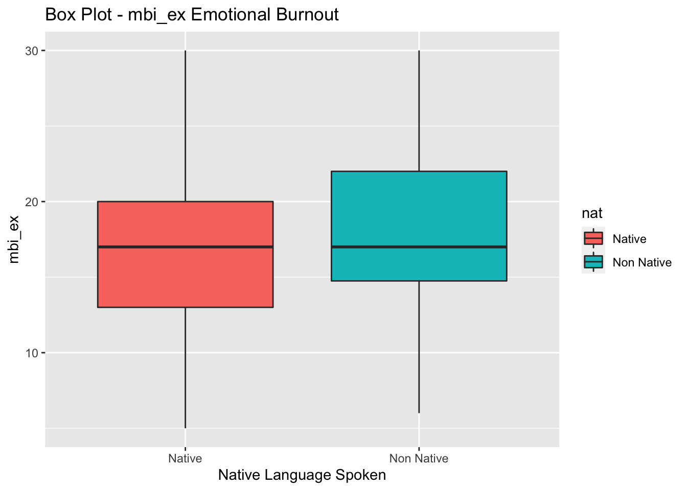
Native language speaking and non-native language speaking medical students seemed to have nearly identical median scores for Emotional Exhaustion (mbi_ex). The IQR however for non-native languge speaking students does appear to start & end higher (higher Q1 & Q3 MBI-ex scores) than native students, suggesting the potential for higher emotional exhuastion burnout for non-native language speaking students.
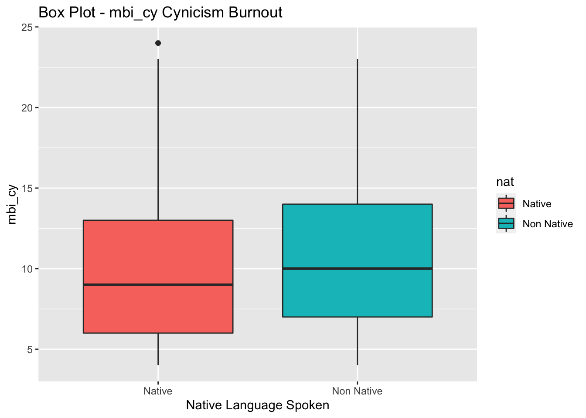
Non-native speaking medical students appeared to score slightly higher on average than non-native speaking medical students on Cynicism as measured by the mbi-cy, with a higher median score. The IQR of mbi-cy scores for non-native language speaking medical students is higher for non-native students with a higher Q1 & Q3. There appears to be one high outlier for native language speakers cynicism scores.
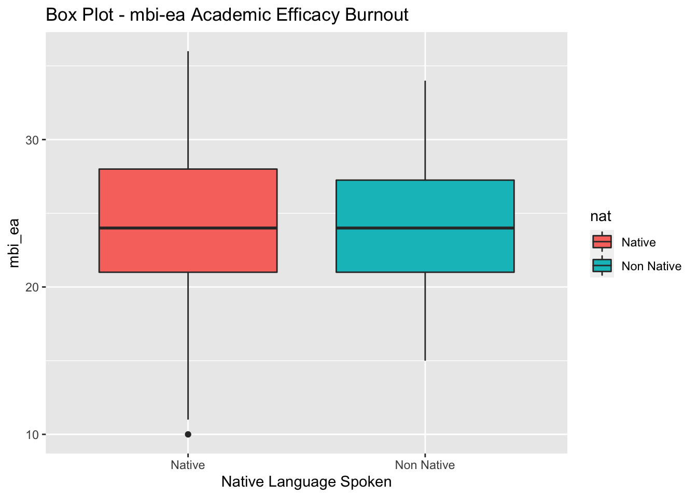
Lastly, native language speaking and non-native language speaking medical students seemed to have nearly identical median scores for Academic Efficacy burnout (mbi_ea), with one low-outlier of scores for native language speaking medical students. However non-native medical school students have a lower MBI_ea Q1 & Q3 which corresponds with higher burnout on this subscale.
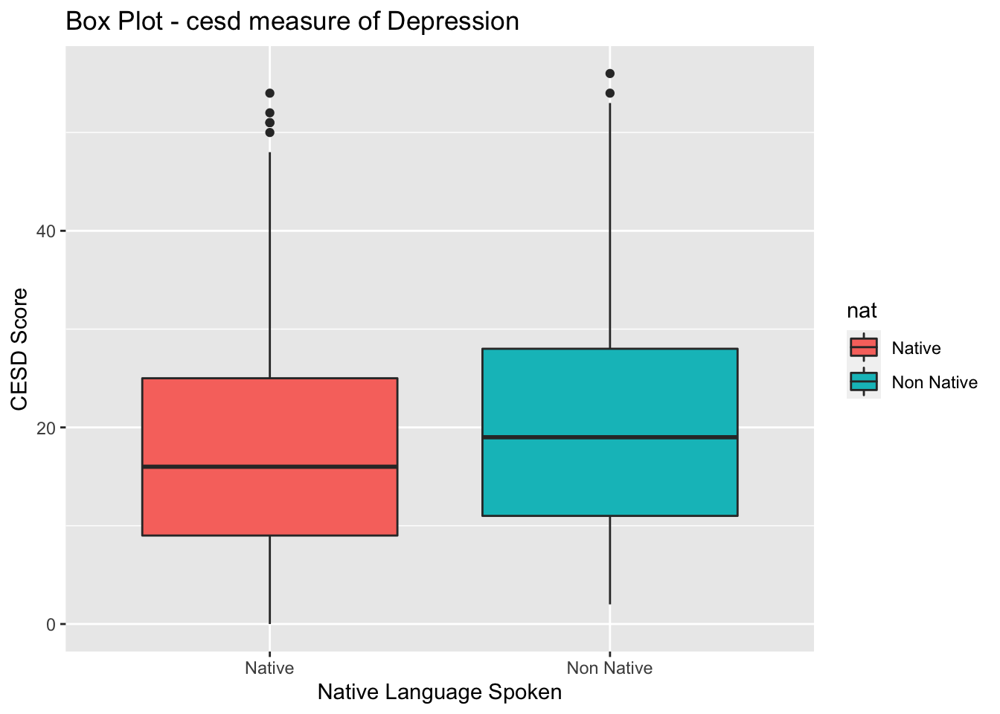
Non-native national language speakers have a higher median on CESD score than native national language speakers, suggesting higher depression among native students. The Q1 & Q3 of the non-native language speaking medical students CESD is higher than scores for native language speaking students. There are several high outliers for native and non-native language speaking students.
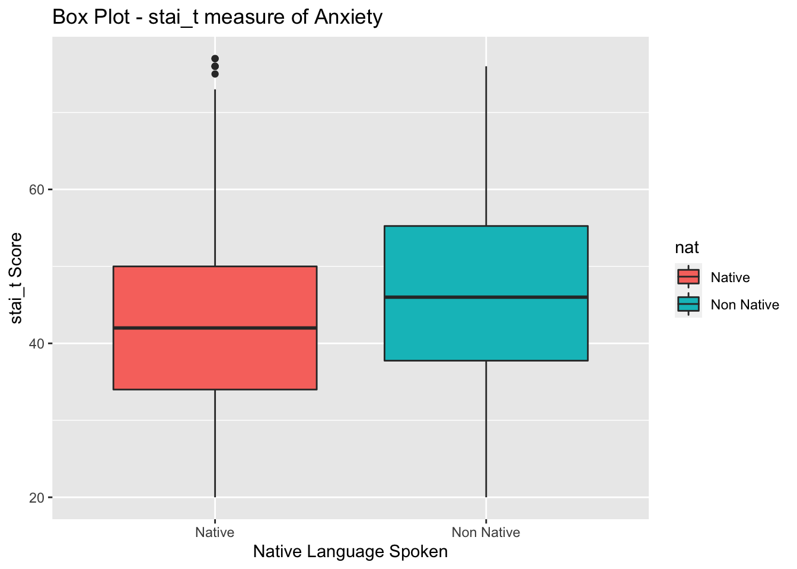
Non-native national languages speaking medical students have a higher median, Q1, & Q3 stai_t anxiety score than native language speaking medical students.
Higher depression and anxiety score for non-native students are not the hypothesis being tested, but it is plausible that anxiety & depression mediate the impact of speaking a native language on burnout. Anxiety and depression, as measured by stai_t and cesd scores, will be treated as interaction terms in linear regression model, with graphic models used to evaluate this.
Previous studies on the impact of gender and burnout found that being female predicted higher burnout. In the linear regression model, I will want to control for the impact of gender on burnout scores by including it as an explanatory variable.
On the plots below, I facet wrapped the box & whiskers plot of emotional burnout comparison by native language to visualize difference in the 3 MBI burnout scales when controlled by gender.
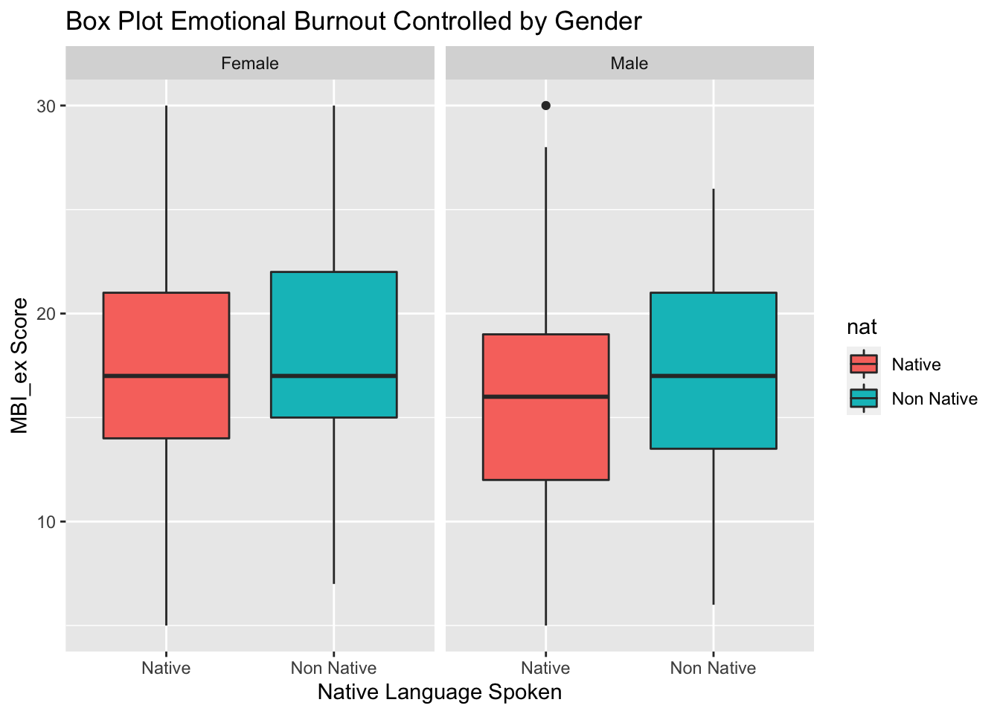
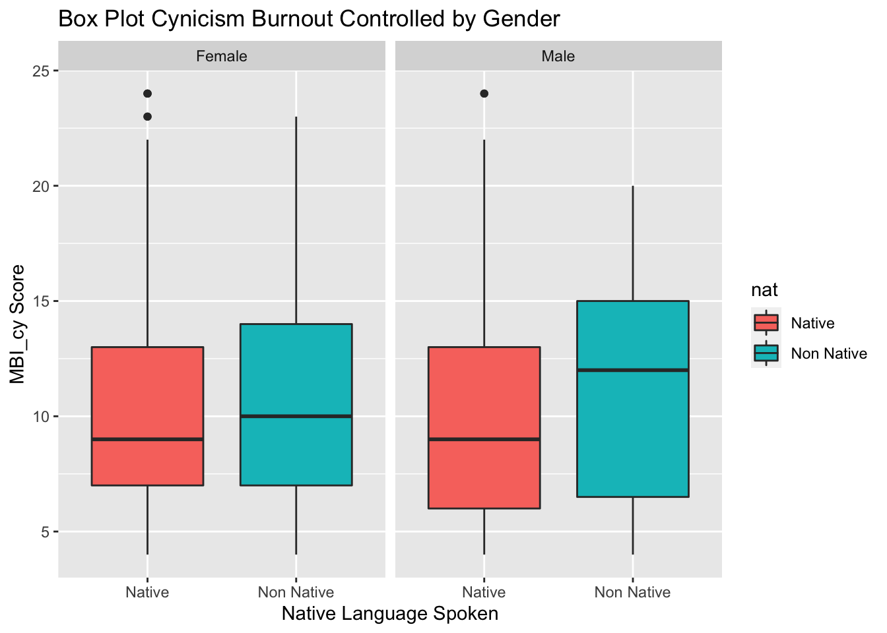
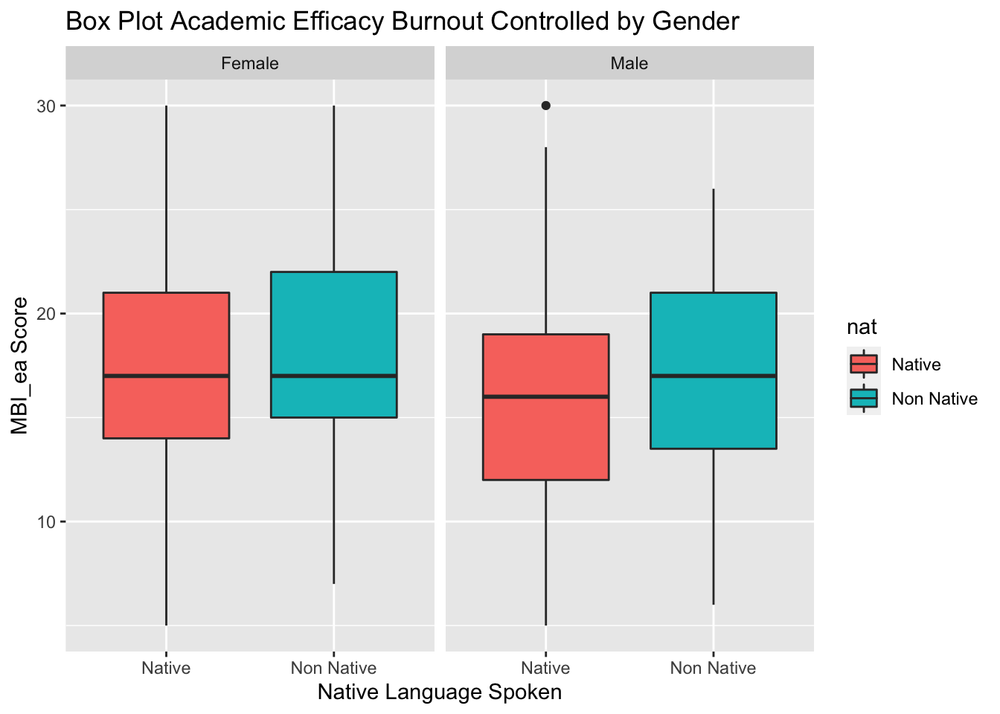
Controlling for gender there still seems to be a difference between the MBI scores of native and non-native language speaking MBI burnout scores. Looking at the academic efficacy score, for non-native male med students it appears to be higher than native male med students, suggesting lower academic efficacy burnout counter to my hypothesis.
In response to feedback on Check In 1, I kept categorical data coded as dummy variables 0,1 format for the linear regression. I did keep a “prop”data set record to use to calculate proportions & frequencies of categorical variables.
In deciding how to best work with the 3 MBI burnout variables, I reviewed literature on burnout and how prior researchers chose to work with the variables. A 2016 systematic review by Doulougeri et al. of 50 articles on burnout in medical staff as measured by the MBI found that the majority of studies analyzed burn out as sub scales of emotional exhaustion, cynicism (also known as depersonalization), & academic efficacy (also known as professional accomplishment), as opposed to trying to create one total scale.
This approach also aligns with the finding that burnout is often conceptualized as a multidimensional construct. Maslach designed the MBI to distinguish between the three sub-scales. Studies on burnout almost universally considered the MBI emotional exhaustion (EE) sub-scale in determining burnout, sometimes alone, sometimes with cynicism, and sometimes with both cynicism & academic efficacy. According to the literature, burn out is complex and multidimensional concepts, and impacts both an individual’s well being and their ability to perform their job as a medical professional.
Based on all of these factors, I will run three separate models with each of the 3 MBI sub-scales as dependent variables.
Each MBI burnout sub-scale score will be a response variable for each of the 3 models. These scales are numeric and continuous.
As mentioned earlier, a higher score on emotional exhaustion & cynicism are considered indicative of burnout, whereas lower scores of academic efficacy are indicative of burnout
The explanatory variable I am testing in my hypothesis is whether or not a student speaks a native language of the country they are attending medical school in, coded as a binary dummy variable (0 = non-native, 1 = native)
As previous studies have found a relationship between gender and burnout, I will need to have gender as a control variable in the model. I will also examine if I will need to also control for the influence of having a partner, having a job, or seeing a therapist in past 12 months (all also binary dummy variables) on medical student burnout, by adding them to the regression model and seeing their impact.
To test my hypothesis that Medical students whose native language is a national language of the country where they are studying will experience lower rates of burnout than medical students with other native languages, I will run a Welch’s Independent T-Test on the data to see if there is a statistically significant difference between the burnout of native and non-native medical students. Specifically, I will run a one-sided test, to see if the mean burnout of non-native students is higher than of native students.
The null hypothesis is that there is no difference in the mean burnout of native medical students than non-native medical students
The alternative hypothesis is that the mean burnout of native students is less than that non-native medical students. For the emotional exhaustion & cyncicism burnout scores, higher score corresponds to higher burnout, for the academic efficacy, a lower score corresponds with higher burnout.
H0: μ = μ0
HA: μ < μ0
The first T-Test compared the emotional exhaustion scores of native and non-native language speaking medical students.
# A tibble: 6 × 21
id age year sex glang part job stud_h health psyt jspe qcae_cog
<dbl> <dbl> <dbl> <dbl> <dbl> <dbl> <dbl> <dbl> <dbl> <dbl> <dbl> <dbl>
1 2 18 1 1 120 1 0 56 3 0 88 62
2 4 26 4 1 1 1 0 20 4 0 109 55
3 9 21 3 2 1 0 0 36 3 0 106 64
4 10 21 2 2 1 0 1 51 5 0 101 52
5 13 21 3 1 1 1 0 22 4 0 102 58
6 14 26 5 2 1 1 1 10 2 0 102 48
# … with 9 more variables: qcae_aff <dbl>, amsp <dbl>, erec_mean <dbl>,
# cesd <dbl>, stai_t <dbl>, mbi_ex <dbl>, mbi_cy <dbl>, mbi_ea <dbl>,
# NatLang <dbl>
Two Sample t-test
data: Native$mbi_ex and NonNative$mbi_ex
t = -1.3841, df = 884, p-value = 0.08334
alternative hypothesis: true difference in means is less than 0
95 percent confidence interval:
-Inf 0.151154
sample estimates:
mean of x mean of y
16.79445 17.59140 With a p-value of 0.08 the difference between the mean is statistically significant at the .1 level but not the standard 0.05 level. Therefor I fail to reject the null hypothesis that there is no difference between the native and non-native students MBI_ex scores.
H0: μ = μ0
HA: μ < μ0
Two Sample t-test
data: Native$mbi_cy and NonNative$mbi_cy
t = -1.2331, df = 884, p-value = 0.1089
alternative hypothesis: true difference in means is less than 0
95 percent confidence interval:
-Inf 0.2080785
sample estimates:
mean of x mean of y
10.01387 10.63441 Next the cynicism MBI burnout scores for native and non-native scores were compared in a T-Test. With a p-value of 0.1089, the difference between the means is not statistically significant at the 0.1 or the 0.05 levels. I fail to reject the null hypothesis that there is no difference between the native and non-native medical students MBI_cy scores.
H0: μ = μ0
HA: μ > μ0
Lastly, I performed a T-Test on the final MBI sub-score, the academic efficacy between native and non-native language speaking medical students. As a lower MBI_ea score corresponds with higher burnout on this sub-scale the alternative hypothesis of the one-sided T-test is that
Two Sample t-test
data: Native$mbi_ea and NonNative$mbi_ea
t = -0.29993, df = 884, p-value = 0.6179
alternative hypothesis: true difference in means is greater than 0
95 percent confidence interval:
-0.9891101 Inf
sample estimates:
mean of x mean of y
24.19168 24.34409 With a p-value of 0.6179 the mean MBI_ea score of native medical students is not greater than the mean MBI_ea score of native people at all, let alone at the statistically significant level.
Out of the 3 MBI burnout sub-scales, only the one-sided difference in burnout as measured on the MBI emotional exhaustion scale is statistically significant at the 0.1 level. There is not statistically significant higher burnout on any of the 3 MBI scores at the 0.05 level. I therefor fail to reject the null hypothesis that there is no difference between the mean MBI burnout scores of native and non-native language speaking medical school students.
Though not my hypothesis, I ran Welch’s T-tests on anxiety (stai_t) and depression (CESD) scores to see if there was a statistically significant difference between native and non-native speaking medical school students. Once again I ran a one-sided t-test, with the assumption that the mean anxiety and depression of non-native language speaking medical students will be higher than that of native language speaking medical students.
H0: μ = μ0
HA: μ < μ0
Two Sample t-test
data: Native$stai_t and NonNative$stai_t
t = -2.5743, df = 884, p-value = 0.005103
alternative hypothesis: true difference in means is less than 0
95 percent confidence interval:
-Inf -1.214218
sample estimates:
mean of x mean of y
42.54477 45.91398 With a p-value of 0.005 there is strong statistical significance to reject the null hypothesis that there is no difference in the mean anxiety of native and non-native language speaking medical students. This suggests that med students who speak the non-native language experience higher anxiety levels than native-language speakers.
Two Sample t-test
data: Native$cesd and NonNative$cesd
t = -2.7533, df = 884, p-value = 0.00301
alternative hypothesis: true difference in means is less than 0
95 percent confidence interval:
-Inf -1.387275
sample estimates:
mean of x mean of y
17.68852 21.13978 With a p-value of 0.003 there is strong statistical significance to reject the null hypothesis that there is no difference in the mean depression of native and non-native language speaking medical students. This suggests that med students who speak the non-native language experience higher depression levels than native-language speakers.
Though I failed to reject my null hypothesis of burnout, returning to my research question of” Why are some medical students more likely to experience burnout than others? it seems that native language status, anxiety, depression all interact on one-another to help explain burnout. This will be explored further in the linear regression models.
First, I created a linear regression model with only native language status as the explanatory variable and mbi_ex emotional exhaustion burnout score as the outcome variable. As seen in the summary of the model below with a p-value of 0.132 and Adjusted R-squared value of 0.001449, variance in native language speaking status alone does explain variance in emotional exhaustion MBI scores. National language is not a statistically significant explanatory variable in the linear regression model. The AIC of this first model is 5422, with the lower the AIC score the better the fit of the model
Call:
lm(formula = mbi_ex ~ NatLang, data = FinalRecoded2)
Residuals:
Min 1Q Median 3Q Max
-11.7921 -3.7921 0.2079 3.2079 13.2079
Coefficients:
Estimate Std. Error t value Pr(>|t|)
(Intercept) 17.6630 0.5462 32.338 <2e-16 ***
NatLang -0.8709 0.5772 -1.509 0.132
---
Signif. codes: 0 '***' 0.001 '**' 0.01 '*' 0.05 '.' 0.1 ' ' 1
Residual standard error: 5.239 on 879 degrees of freedom
Multiple R-squared: 0.002584, Adjusted R-squared: 0.001449
F-statistic: 2.277 on 1 and 879 DF, p-value: 0.1317[1] 5422.286The second linear regression model includes gender as an explanatory variable along with native-language status for the outcome of emotional exhaustion MBI scores. In this regression model gender is statistically significant explanatory variable with a p value of 1.66 x e6, but native-language status is not. The adjusted R-squared value is higher than the first model but still low at 0.02612. The AIC value of this model is 5401 is lower than the first model.
Call:
lm(formula = mbi_ex ~ NatLang + gender, data = FinalRecoded2)
Residuals:
Min 1Q Median 3Q Max
-12.3723 -3.3723 -0.3723 3.6277 14.4441
Coefficients:
Estimate Std. Error t value Pr(>|t|)
(Intercept) 16.3007 0.6089 26.771 < 2e-16 ***
NatLang -0.7449 0.5706 -1.305 0.192
gender 1.8164 0.3766 4.823 1.66e-06 ***
---
Signif. codes: 0 '***' 0.001 '**' 0.01 '*' 0.05 '.' 0.1 ' ' 1
Residual standard error: 5.174 on 878 degrees of freedom
Multiple R-squared: 0.02833, Adjusted R-squared: 0.02612
F-statistic: 12.8 on 2 and 878 DF, p-value: 3.317e-06[1] 5401.246In the third linear regression model was a 3-way interaction of depression (CESD), anxiety (stai_t), & native language as an explanatory variable for MBI emotional exhaustion scores in addition to gender. Adding the 3 way interaction term to the model greatly increased the predictive power of the model, raising the adjusted R-squared value to 0.3885. In this model, Anxiety (stai_t) & Depression * Anxiety (ces*stai_t) are both statistically significant at the 0.05 level, and Depression (cesd) is statistically significant at the 0.001 level. The AIC of 4997 is the lowest of any model so far, suggesting the best fit.
Call:
lm(formula = mbi_ex ~ gender + NatLang * cesd * stai_t, data = FinalRecoded2)
Residuals:
Min 1Q Median 3Q Max
-14.0395 -2.7678 -0.1503 2.5525 14.0706
Coefficients:
Estimate Std. Error t value Pr(>|t|)
(Intercept) 6.629628 2.729549 2.429 0.01535 *
gender -0.060270 0.310448 -0.194 0.84611
NatLang 0.684336 2.881436 0.237 0.81233
cesd 0.454730 0.140458 3.237 0.00125 **
stai_t 0.146600 0.068337 2.145 0.03221 *
NatLang:cesd -0.125780 0.148435 -0.847 0.39702
NatLang:stai_t -0.010215 0.072736 -0.140 0.88834
cesd:stai_t -0.004831 0.002364 -2.044 0.04128 *
NatLang:cesd:stai_t 0.002343 0.002559 0.916 0.36011
---
Signif. codes: 0 '***' 0.001 '**' 0.01 '*' 0.05 '.' 0.1 ' ' 1
Residual standard error: 4.1 on 872 degrees of freedom
Multiple R-squared: 0.3941, Adjusted R-squared: 0.3885
F-statistic: 70.89 on 8 and 872 DF, p-value: < 2.2e-16[1] 4997.202To determine the best model, I added the control variables of hours studied, having a partner, job status, consulting a psychotherapist in past 12 months, & health satisfaction to see the impact on the adjusted R squared value.
# A tibble: 6 × 22
id age year sex glang part job stud_h health psyt jspe qcae_cog
<dbl> <dbl> <dbl> <dbl> <dbl> <dbl> <dbl> <dbl> <dbl> <dbl> <dbl> <dbl>
1 2 18 1 1 120 1 0 56 3 0 88 62
2 4 26 4 1 1 1 0 20 4 0 109 55
3 9 21 3 2 1 0 0 36 3 0 106 64
4 10 21 2 2 1 0 1 51 5 0 101 52
5 13 21 3 1 1 1 0 22 4 0 102 58
6 14 26 5 2 1 1 1 10 2 0 102 48
# … with 10 more variables: qcae_aff <dbl>, amsp <dbl>, erec_mean <dbl>,
# cesd <dbl>, stai_t <dbl>, mbi_ex <dbl>, mbi_cy <dbl>, mbi_ea <dbl>,
# NatLang <dbl>, gender <dbl>
Call:
lm(formula = mbi_ex ~ gender + stud_h + NatLang * cesd * stai_t,
data = FinalRecoded2)
Residuals:
Min 1Q Median 3Q Max
-13.557 -2.759 -0.194 2.566 14.132
Coefficients:
Estimate Std. Error t value Pr(>|t|)
(Intercept) 6.041386 2.727628 2.215 0.02703 *
gender -0.017473 0.309668 -0.056 0.95502
stud_h 0.024347 0.008830 2.757 0.00595 **
NatLang 0.816214 2.870986 0.284 0.77625
cesd 0.449439 0.139943 3.212 0.00137 **
stai_t 0.143298 0.068090 2.105 0.03562 *
NatLang:cesd -0.125427 0.147877 -0.848 0.39657
NatLang:stai_t -0.008967 0.072463 -0.124 0.90154
cesd:stai_t -0.004716 0.002355 -2.002 0.04559 *
NatLang:cesd:stai_t 0.002219 0.002550 0.870 0.38433
---
Signif. codes: 0 '***' 0.001 '**' 0.01 '*' 0.05 '.' 0.1 ' ' 1
Residual standard error: 4.084 on 871 degrees of freedom
Multiple R-squared: 0.3993, Adjusted R-squared: 0.3931
F-statistic: 64.33 on 9 and 871 DF, p-value: < 2.2e-16
Call:
lm(formula = mbi_ex ~ gender + stud_h + part + NatLang * cesd *
stai_t, data = FinalRecoded2)
Residuals:
Min 1Q Median 3Q Max
-13.8288 -2.7626 -0.1144 2.5427 14.2053
Coefficients:
Estimate Std. Error t value Pr(>|t|)
(Intercept) 5.474759 2.732407 2.004 0.045418 *
gender -0.047923 0.309213 -0.155 0.876870
stud_h 0.026136 0.008843 2.955 0.003207 **
part 0.640704 0.281038 2.280 0.022862 *
NatLang 0.966911 2.864856 0.338 0.735816
cesd 0.466905 0.139817 3.339 0.000875 ***
stai_t 0.146331 0.067939 2.154 0.031526 *
NatLang:cesd -0.141738 0.147695 -0.960 0.337491
NatLang:stai_t -0.012644 0.072307 -0.175 0.861224
cesd:stai_t -0.004956 0.002352 -2.107 0.035400 *
NatLang:cesd:stai_t 0.002492 0.002546 0.979 0.327957
---
Signif. codes: 0 '***' 0.001 '**' 0.01 '*' 0.05 '.' 0.1 ' ' 1
Residual standard error: 4.075 on 870 degrees of freedom
Multiple R-squared: 0.4029, Adjusted R-squared: 0.396
F-statistic: 58.7 on 10 and 870 DF, p-value: < 2.2e-16
Call:
lm(formula = mbi_ex ~ gender + stud_h + part + job + NatLang *
cesd * stai_t, data = FinalRecoded2)
Residuals:
Min 1Q Median 3Q Max
-13.8833 -2.7470 -0.0854 2.5207 14.1412
Coefficients:
Estimate Std. Error t value Pr(>|t|)
(Intercept) 5.576368 2.744314 2.032 0.042460 *
gender -0.044168 0.309488 -0.143 0.886549
stud_h 0.025410 0.009013 2.819 0.004924 **
part 0.643363 0.281241 2.288 0.022401 *
job -0.124332 0.295061 -0.421 0.673584
NatLang 0.924792 2.867954 0.322 0.747184
cesd 0.464843 0.139968 3.321 0.000934 ***
stai_t 0.145510 0.068000 2.140 0.032644 *
NatLang:cesd -0.139382 0.147871 -0.943 0.346151
NatLang:stai_t -0.011844 0.072366 -0.164 0.870031
cesd:stai_t -0.004920 0.002355 -2.089 0.036975 *
NatLang:cesd:stai_t 0.002448 0.002550 0.960 0.337149
---
Signif. codes: 0 '***' 0.001 '**' 0.01 '*' 0.05 '.' 0.1 ' ' 1
Residual standard error: 4.076 on 869 degrees of freedom
Multiple R-squared: 0.403, Adjusted R-squared: 0.3954
F-statistic: 53.33 on 11 and 869 DF, p-value: < 2.2e-16
Call:
lm(formula = mbi_ex ~ gender + stud_h + part + psyt + NatLang *
cesd * stai_t, data = FinalRecoded2)
Residuals:
Min 1Q Median 3Q Max
-13.8366 -2.7590 -0.1101 2.5433 14.2074
Coefficients:
Estimate Std. Error t value Pr(>|t|)
(Intercept) 5.479195 2.736089 2.003 0.045534 *
gender -0.049039 0.310571 -0.158 0.874572
stud_h 0.026166 0.008880 2.947 0.003297 **
part 0.640210 0.281454 2.275 0.023170 *
psyt 0.014441 0.349983 0.041 0.967096
NatLang 0.963298 2.867838 0.336 0.737030
cesd 0.467043 0.139937 3.338 0.000881 ***
stai_t 0.146139 0.068138 2.145 0.032250 *
NatLang:cesd -0.141870 0.147815 -0.960 0.337432
NatLang:stai_t -0.012506 0.072426 -0.173 0.862949
cesd:stai_t -0.004957 0.002354 -2.106 0.035478 *
NatLang:cesd:stai_t 0.002491 0.002548 0.978 0.328421
---
Signif. codes: 0 '***' 0.001 '**' 0.01 '*' 0.05 '.' 0.1 ' ' 1
Residual standard error: 4.077 on 869 degrees of freedom
Multiple R-squared: 0.4029, Adjusted R-squared: 0.3953
F-statistic: 53.3 on 11 and 869 DF, p-value: < 2.2e-16
Call:
lm(formula = mbi_ex ~ gender + stud_h + part + health + NatLang *
cesd * stai_t, data = FinalRecoded2)
Residuals:
Min 1Q Median 3Q Max
-14.3761 -2.7426 -0.1272 2.5977 14.6000
Coefficients:
Estimate Std. Error t value Pr(>|t|)
(Intercept) 7.504517 2.804689 2.676 0.007598 **
gender -0.041008 0.307841 -0.133 0.894058
stud_h 0.025756 0.008805 2.925 0.003532 **
part 0.672159 0.279982 2.401 0.016572 *
health -0.414872 0.139647 -2.971 0.003051 **
NatLang 0.672755 2.853775 0.236 0.813688
cesd 0.463579 0.139197 3.330 0.000904 ***
stai_t 0.139753 0.067672 2.065 0.039205 *
NatLang:cesd -0.139787 0.147037 -0.951 0.342022
NatLang:stai_t -0.005416 0.072025 -0.075 0.940076
cesd:stai_t -0.005056 0.002342 -2.159 0.031115 *
NatLang:cesd:stai_t 0.002378 0.002535 0.938 0.348603
---
Signif. codes: 0 '***' 0.001 '**' 0.01 '*' 0.05 '.' 0.1 ' ' 1
Residual standard error: 4.056 on 869 degrees of freedom
Multiple R-squared: 0.4089, Adjusted R-squared: 0.4014
F-statistic: 54.64 on 11 and 869 DF, p-value: < 2.2e-16Variables that improved model fit were:
The best-fitting linear regression model for MBI_ex as determined by adjusted R-squared includes gender, hours studied, health satisfaction, having a partner, and 3-way interaction between native language, depression, and anxiety as explanatory variables. This has an Adjusted R-Squared value of 0.402, suggesting much of the the variance in MBI emotional exhaustion scores of medical school students is explained by variance in the explanatory variables. The AIC value of 4981 is the lowest of any of the linear regression models, suggesting the best fit.
Explanatory variables significant at the 0.05 level are:
Explanatory variables significant at the 0.01 level are:
Explanatory variables significant at the 0.01 level are:
Call:
lm(formula = mbi_ex ~ gender + stud_h + health + part + NatLang *
cesd * stai_t, data = FinalRecoded2)
Residuals:
Min 1Q Median 3Q Max
-14.3761 -2.7426 -0.1272 2.5977 14.6000
Coefficients:
Estimate Std. Error t value Pr(>|t|)
(Intercept) 7.504517 2.804689 2.676 0.007598 **
gender -0.041008 0.307841 -0.133 0.894058
stud_h 0.025756 0.008805 2.925 0.003532 **
health -0.414872 0.139647 -2.971 0.003051 **
part 0.672159 0.279982 2.401 0.016572 *
NatLang 0.672755 2.853775 0.236 0.813688
cesd 0.463579 0.139197 3.330 0.000904 ***
stai_t 0.139753 0.067672 2.065 0.039205 *
NatLang:cesd -0.139787 0.147037 -0.951 0.342022
NatLang:stai_t -0.005416 0.072025 -0.075 0.940076
cesd:stai_t -0.005056 0.002342 -2.159 0.031115 *
NatLang:cesd:stai_t 0.002378 0.002535 0.938 0.348603
---
Signif. codes: 0 '***' 0.001 '**' 0.01 '*' 0.05 '.' 0.1 ' ' 1
Residual standard error: 4.056 on 869 degrees of freedom
Multiple R-squared: 0.4089, Adjusted R-squared: 0.4014
F-statistic: 54.64 on 11 and 869 DF, p-value: < 2.2e-16[1] 4981.395For the cynicism burnout sub scale, I once again started by running a linear regression model with only Native Language as the explanatory variable and mbi_cy score as the outcome variable. NatLang was not a statistically significant explanatory variable with a p-value of 0.186. The Adjusted R-Squared of the model was very low at 0.0085, suggesting that variance NatLang alone does not explain the variance in mbi_cy scores for medical students. The AIC of 5183 serves as a baseline for comparison for goodness of fit with future models.
Call:
lm(formula = mbi_cy ~ NatLang, data = FinalRecoded2)
Residuals:
Min 1Q Median 3Q Max
-6.6630 -3.9962 -0.9962 3.0038 14.0038
Coefficients:
Estimate Std. Error t value Pr(>|t|)
(Intercept) 10.6630 0.4769 22.358 <2e-16 ***
NatLang -0.6668 0.5040 -1.323 0.186
---
Signif. codes: 0 '***' 0.001 '**' 0.01 '*' 0.05 '.' 0.1 ' ' 1
Residual standard error: 4.574 on 879 degrees of freedom
Multiple R-squared: 0.001988, Adjusted R-squared: 0.0008526
F-statistic: 1.751 on 1 and 879 DF, p-value: 0.1861[1] 5183.262As with the previous emotional exhaustion sub-scale, next I added gender as a the second explanatory variable, as the impact of gender on burnout has been studied. Not only were neither NatLang or gender statistically significant (p-values of 0.191 and 0.783 respectively), but the linear regression model with gender & NatLang as explanatory variables had a worse Adjusted R-Squared than the first model with a negative R-squared of -0.0001993. The AIC of 5185 is higher than in the first model, confirming the worse fit of this model.
Call:
lm(formula = mbi_cy ~ NatLang + gender, data = FinalRecoded2)
Residuals:
Min 1Q Median 3Q Max
-6.6859 -3.9339 -0.9339 2.9745 14.0661
Coefficients:
Estimate Std. Error t value Pr(>|t|)
(Intercept) 10.59434 0.53862 19.669 <2e-16 ***
NatLang -0.66049 0.50475 -1.309 0.191
gender 0.09161 0.33313 0.275 0.783
---
Signif. codes: 0 '***' 0.001 '**' 0.01 '*' 0.05 '.' 0.1 ' ' 1
Residual standard error: 4.577 on 878 degrees of freedom
Multiple R-squared: 0.002074, Adjusted R-squared: -0.0001993
F-statistic: 0.9123 on 2 and 878 DF, p-value: 0.402[1] 5185.186For the third linear regression model I added the 3 way interaction of NatLang x Anxiety (stai-t score) x Depression (cesd) as an explanatory variable to gender in model 2. The Adjusted R-squared value of 0.1775 suggest a much better fiting model than in the prior 2 models. Gender is statistically significant at the 0.01 level (p-value = 0.0125). Depression (cesd, p-value = 0.07813) & Anxiety (stai_t, p-value = 0.08613) are both significant at the 0.1 level. Contrary to model 2, removing gender as an explanatory variable would lower the adjusted R-squared to gender 0.1685. The AIC of this model is 5027, suggesting the best fit so far.
Call:
lm(formula = mbi_cy ~ +gender + NatLang * cesd * stai_t, data = FinalRecoded2)
Residuals:
Min 1Q Median 3Q Max
-10.3237 -3.0923 -0.6276 2.4286 15.6652
Coefficients:
Estimate Std. Error t value Pr(>|t|)
(Intercept) 3.017407 2.763302 1.092 0.27515
gender -1.017625 0.314287 -3.238 0.00125 **
NatLang 3.154415 2.917068 1.081 0.27983
cesd 0.250788 0.142195 1.764 0.07813 .
stai_t 0.118863 0.069182 1.718 0.08613 .
NatLang:cesd -0.072387 0.150271 -0.482 0.63013
NatLang:stai_t -0.072897 0.073635 -0.990 0.32246
cesd:stai_t -0.002160 0.002393 -0.903 0.36690
NatLang:cesd:stai_t 0.001455 0.002590 0.562 0.57435
---
Signif. codes: 0 '***' 0.001 '**' 0.01 '*' 0.05 '.' 0.1 ' ' 1
Residual standard error: 4.151 on 872 degrees of freedom
Multiple R-squared: 0.1849, Adjusted R-squared: 0.1775
F-statistic: 24.73 on 8 and 872 DF, p-value: < 2.2e-16[1] 5018.858
Call:
lm(formula = mbi_cy ~ NatLang * cesd * stai_t, data = FinalRecoded2)
Residuals:
Min 1Q Median 3Q Max
-10.4698 -3.1266 -0.6844 2.5435 15.2039
Coefficients:
Estimate Std. Error t value Pr(>|t|)
(Intercept) 2.689211 2.776402 0.969 0.3330
NatLang 3.325117 2.932391 1.134 0.2571
cesd 0.237590 0.142907 1.663 0.0968 .
stai_t 0.112038 0.069524 1.611 0.1074
NatLang:cesd -0.071845 0.151085 -0.476 0.6345
NatLang:stai_t -0.077049 0.074023 -1.041 0.2982
cesd:stai_t -0.002016 0.002406 -0.838 0.4022
NatLang:cesd:stai_t 0.001495 0.002604 0.574 0.5660
---
Signif. codes: 0 '***' 0.001 '**' 0.01 '*' 0.05 '.' 0.1 ' ' 1
Residual standard error: 4.173 on 873 degrees of freedom
Multiple R-squared: 0.1751, Adjusted R-squared: 0.1685
F-statistic: 26.48 on 7 and 873 DF, p-value: < 2.2e-16` To determine the best model, I added the control variables of hours studied, having a partner, job status, consulting a psychotherapist in past 12 months, & health satisfaction to see the impact on the adjusted R squared value.
Call:
lm(formula = mbi_cy ~ gender + stud_h + NatLang * cesd * stai_t,
data = FinalRecoded2)
Residuals:
Min 1Q Median 3Q Max
-10.6947 -2.9170 -0.5115 2.5003 15.8265
Coefficients:
Estimate Std. Error t value Pr(>|t|)
(Intercept) 4.202266 2.725466 1.542 0.12347
gender -1.103828 0.309423 -3.567 0.00038 ***
stud_h -0.049040 0.008823 -5.558 3.62e-08 ***
NatLang 2.888782 2.868711 1.007 0.31422
cesd 0.261446 0.139832 1.870 0.06186 .
stai_t 0.125514 0.068036 1.845 0.06540 .
NatLang:cesd -0.073097 0.147759 -0.495 0.62093
NatLang:stai_t -0.075411 0.072406 -1.041 0.29793
cesd:stai_t -0.002394 0.002354 -1.017 0.30943
NatLang:cesd:stai_t 0.001705 0.002548 0.669 0.50350
---
Signif. codes: 0 '***' 0.001 '**' 0.01 '*' 0.05 '.' 0.1 ' ' 1
Residual standard error: 4.081 on 871 degrees of freedom
Multiple R-squared: 0.2129, Adjusted R-squared: 0.2047
F-statistic: 26.17 on 9 and 871 DF, p-value: < 2.2e-16
Call:
lm(formula = mbi_cy ~ gender + stud_h + part + NatLang * cesd *
stai_t, data = FinalRecoded2)
Residuals:
Min 1Q Median 3Q Max
-10.7850 -2.9549 -0.5399 2.5005 15.7597
Coefficients:
Estimate Std. Error t value Pr(>|t|)
(Intercept) 4.033722 2.737663 1.473 0.141000
gender -1.112886 0.309808 -3.592 0.000346 ***
stud_h -0.048508 0.008860 -5.475 5.73e-08 ***
part 0.190578 0.281578 0.677 0.498699
NatLang 2.933607 2.870368 1.022 0.307050
cesd 0.266642 0.140086 1.903 0.057316 .
stai_t 0.126416 0.068070 1.857 0.063629 .
NatLang:cesd -0.077949 0.147979 -0.527 0.598499
NatLang:stai_t -0.076504 0.072446 -1.056 0.291256
cesd:stai_t -0.002465 0.002357 -1.046 0.295846
NatLang:cesd:stai_t 0.001786 0.002551 0.700 0.484009
---
Signif. codes: 0 '***' 0.001 '**' 0.01 '*' 0.05 '.' 0.1 ' ' 1
Residual standard error: 4.082 on 870 degrees of freedom
Multiple R-squared: 0.2133, Adjusted R-squared: 0.2042
F-statistic: 23.58 on 10 and 870 DF, p-value: < 2.2e-16
Call:
lm(formula = mbi_cy ~ gender + stud_h + job + NatLang * cesd *
stai_t, data = FinalRecoded2)
Residuals:
Min 1Q Median 3Q Max
-10.6353 -2.9306 -0.4633 2.5358 15.8792
Coefficients:
Estimate Std. Error t value Pr(>|t|)
(Intercept) 4.085731 2.737852 1.492 0.135980
gender -1.108179 0.309698 -3.578 0.000365 ***
stud_h -0.048219 0.008997 -5.360 1.07e-07 ***
job 0.139370 0.295455 0.472 0.637250
NatLang 2.936696 2.871789 1.023 0.306780
cesd 0.263839 0.139986 1.885 0.059796 .
stai_t 0.126449 0.068095 1.857 0.063658 .
NatLang:cesd -0.075814 0.147938 -0.512 0.608452
NatLang:stai_t -0.076325 0.072464 -1.053 0.292508
cesd:stai_t -0.002435 0.002356 -1.034 0.301638
NatLang:cesd:stai_t 0.001755 0.002551 0.688 0.491563
---
Signif. codes: 0 '***' 0.001 '**' 0.01 '*' 0.05 '.' 0.1 ' ' 1
Residual standard error: 4.083 on 870 degrees of freedom
Multiple R-squared: 0.2131, Adjusted R-squared: 0.204
F-statistic: 23.56 on 10 and 870 DF, p-value: < 2.2e-16
Call:
lm(formula = mbi_cy ~ gender + stud_h + psyt + NatLang * cesd *
stai_t, data = FinalRecoded2)
Residuals:
Min 1Q Median 3Q Max
-10.4672 -2.9080 -0.5373 2.4705 15.8724
Coefficients:
Estimate Std. Error t value Pr(>|t|)
(Intercept) 4.295984 2.727292 1.575 0.11558
gender -1.130528 0.310664 -3.639 0.00029 ***
stud_h -0.048290 0.008857 -5.452 6.48e-08 ***
psyt 0.338400 0.350042 0.967 0.33394
NatLang 2.806847 2.870070 0.978 0.32836
cesd 0.264995 0.139885 1.894 0.05851 .
stai_t 0.121060 0.068194 1.775 0.07621 .
NatLang:cesd -0.076487 0.147807 -0.517 0.60495
NatLang:stai_t -0.072240 0.072483 -0.997 0.31921
cesd:stai_t -0.002423 0.002354 -1.029 0.30364
NatLang:cesd:stai_t 0.001690 0.002548 0.663 0.50741
---
Signif. codes: 0 '***' 0.001 '**' 0.01 '*' 0.05 '.' 0.1 ' ' 1
Residual standard error: 4.081 on 870 degrees of freedom
Multiple R-squared: 0.2137, Adjusted R-squared: 0.2047
F-statistic: 23.65 on 10 and 870 DF, p-value: < 2.2e-16
Call:
lm(formula = mbi_cy ~ gender + stud_h + health + NatLang * cesd *
stai_t, data = FinalRecoded2)
Residuals:
Min 1Q Median 3Q Max
-10.8164 -2.9790 -0.4869 2.4950 15.9812
Coefficients:
Estimate Std. Error t value Pr(>|t|)
(Intercept) 5.157591 2.811583 1.834 0.066935 .
gender -1.099923 0.309279 -3.556 0.000396 ***
stud_h -0.049257 0.008820 -5.585 3.13e-08 ***
health -0.192624 0.140328 -1.373 0.170211
NatLang 2.748771 2.869069 0.958 0.338293
cesd 0.259503 0.139768 1.857 0.063695 .
stai_t 0.122390 0.068039 1.799 0.072395 .
NatLang:cesd -0.071820 0.147687 -0.486 0.626880
NatLang:stai_t -0.071971 0.072412 -0.994 0.320548
cesd:stai_t -0.002435 0.002353 -1.035 0.301001
NatLang:cesd:stai_t 0.001646 0.002547 0.646 0.518354
---
Signif. codes: 0 '***' 0.001 '**' 0.01 '*' 0.05 '.' 0.1 ' ' 1
Residual standard error: 4.079 on 870 degrees of freedom
Multiple R-squared: 0.2146, Adjusted R-squared: 0.2055
F-statistic: 23.77 on 10 and 870 DF, p-value: < 2.2e-16Variables that increased the adjusted r-squared of the model were:
The best-fitting linear regression model for MBI_cy as determined by adjusted R-squared values includes gender, hours studied, health satisfaction, and the 3-way interaction between native language, depression, and anxiety as explanatory variables. This has an Adjusted R-Squared value of 0.2055, suggesting some of the the variance in MBI cynicism scores of medical school students is explained by variance in the explanatory variables. With the AIC level of 4990, the AIC also confirms this is the best-fitting model.
Explanatory variables significant at the 0.1 level are:
Explanatory variables significant at the 0.001 level are:
Gender
Hours studying (stud_h)
Call:
lm(formula = mbi_cy ~ gender + stud_h + health + NatLang * cesd *
stai_t, data = FinalRecoded2)
Residuals:
Min 1Q Median 3Q Max
-10.8164 -2.9790 -0.4869 2.4950 15.9812
Coefficients:
Estimate Std. Error t value Pr(>|t|)
(Intercept) 5.157591 2.811583 1.834 0.066935 .
gender -1.099923 0.309279 -3.556 0.000396 ***
stud_h -0.049257 0.008820 -5.585 3.13e-08 ***
health -0.192624 0.140328 -1.373 0.170211
NatLang 2.748771 2.869069 0.958 0.338293
cesd 0.259503 0.139768 1.857 0.063695 .
stai_t 0.122390 0.068039 1.799 0.072395 .
NatLang:cesd -0.071820 0.147687 -0.486 0.626880
NatLang:stai_t -0.071971 0.072412 -0.994 0.320548
cesd:stai_t -0.002435 0.002353 -1.035 0.301001
NatLang:cesd:stai_t 0.001646 0.002547 0.646 0.518354
---
Signif. codes: 0 '***' 0.001 '**' 0.01 '*' 0.05 '.' 0.1 ' ' 1
Residual standard error: 4.079 on 870 degrees of freedom
Multiple R-squared: 0.2146, Adjusted R-squared: 0.2055
F-statistic: 23.77 on 10 and 870 DF, p-value: < 2.2e-16[1] 4990.242As with the prior 2 MBI subs scales, I first created a linear regression model with NatLang as the only explanatory variable and academic efficacy burnout MBI_ea as the outcome. NatLang is not a statistically significant explanatory variable in the model with a p-value of 0.852. The Adjusted R-squared of -0.0011 shows the model is a very bad for predicting the outcome variable MBI_ea score. The AIC of this model is 5197.
Call:
lm(formula = mbi_ea ~ NatLang, data = FinalRecoded2)
Residuals:
Min 1Q Median 3Q Max
-14.2205 -3.2205 -0.2205 3.7795 11.7795
Coefficients:
Estimate Std. Error t value Pr(>|t|)
(Intercept) 24.31522 0.48074 50.579 <2e-16 ***
NatLang -0.09469 0.50800 -0.186 0.852
---
Signif. codes: 0 '***' 0.001 '**' 0.01 '*' 0.05 '.' 0.1 ' ' 1
Residual standard error: 4.611 on 879 degrees of freedom
Multiple R-squared: 3.952e-05, Adjusted R-squared: -0.001098
F-statistic: 0.03474 on 1 and 879 DF, p-value: 0.8522[1] 5197.324For the second model, I added the second explanatory variable of gender, based on previous findings of its impact on burnout. In this model, neither NatLang (p-value = 0.819) or gender (p-value = 0.351) are statistically significant. The fit of the model is still very poor, as indicated by the Adjusted R-squared of -0.00124. Still, very litle of the variance in academic efficacy burnout is explained by the variance in gender and native language status. The AIC is slightly higher at 5198, suggesting a poor fit of the model.
Call:
lm(formula = mbi_ea ~ NatLang + gender, data = FinalRecoded2)
Residuals:
Min 1Q Median 3Q Max
-14.4339 -3.1204 -0.1204 3.5661 11.8796
Coefficients:
Estimate Std. Error t value Pr(>|t|)
(Intercept) 24.5503 0.5427 45.238 <2e-16 ***
NatLang -0.1164 0.5086 -0.229 0.819
gender -0.3135 0.3356 -0.934 0.351
---
Signif. codes: 0 '***' 0.001 '**' 0.01 '*' 0.05 '.' 0.1 ' ' 1
Residual standard error: 4.611 on 878 degrees of freedom
Multiple R-squared: 0.001032, Adjusted R-squared: -0.001243
F-statistic: 0.4536 on 2 and 878 DF, p-value: 0.6355[1] 5198.449For the third linear regression model, I added the 3-way interaction of NatLang x Depression (cesd) x Anxiety (stai_t) as an explanatory variable in addition to gender, with the outcome variable of mbi_ea score. The adjusted R-squared of this model is 0.2597, suggesting a much better fit than prior models. In this model, anxiety (stai_t) is statistically significant at the 0.05 level. The AIC of 4938 is the lowest of the models so far, suggesting the best fit.
Call:
lm(formula = mbi_ea ~ gender + NatLang * cesd * stai_t, data = FinalRecoded2)
Residuals:
Min 1Q Median 3Q Max
-15.0246 -2.5302 0.0188 2.5821 15.2910
Coefficients:
Estimate Std. Error t value Pr(>|t|)
(Intercept) 33.040892 2.640002 12.515 < 2e-16 ***
gender 1.138628 0.300263 3.792 0.00016 ***
NatLang -0.921610 2.786906 -0.331 0.74096
cesd -0.122730 0.135850 -0.903 0.36655
stai_t -0.176915 0.066095 -2.677 0.00757 **
NatLang:cesd -0.101544 0.143566 -0.707 0.47957
NatLang:stai_t 0.016992 0.070349 0.242 0.80920
cesd:stai_t 0.001048 0.002286 0.458 0.64674
NatLang:cesd:stai_t 0.001434 0.002475 0.579 0.56252
---
Signif. codes: 0 '***' 0.001 '**' 0.01 '*' 0.05 '.' 0.1 ' ' 1
Residual standard error: 3.965 on 872 degrees of freedom
Multiple R-squared: 0.2664, Adjusted R-squared: 0.2597
F-statistic: 39.58 on 8 and 872 DF, p-value: < 2.2e-16[1] 4938.428
Call:
lm(formula = mbi_ea ~ NatLang * cesd * stai_t, data = FinalRecoded2)
Residuals:
Min 1Q Median 3Q Max
-15.5816 -2.6526 0.1266 2.6563 15.4490
Coefficients:
Estimate Std. Error t value Pr(>|t|)
(Intercept) 33.4081124 2.6583659 12.567 <2e-16 ***
NatLang -1.1126095 2.8077232 -0.396 0.6920
cesd -0.1079627 0.1368312 -0.789 0.4303
stai_t -0.1692785 0.0665684 -2.543 0.0112 *
NatLang:cesd -0.1021503 0.1446617 -0.706 0.4803
NatLang:stai_t 0.0216380 0.0708758 0.305 0.7602
cesd:stai_t 0.0008866 0.0023035 0.385 0.7004
NatLang:cesd:stai_t 0.0013891 0.0024937 0.557 0.5776
---
Signif. codes: 0 '***' 0.001 '**' 0.01 '*' 0.05 '.' 0.1 ' ' 1
Residual standard error: 3.996 on 873 degrees of freedom
Multiple R-squared: 0.2543, Adjusted R-squared: 0.2483
F-statistic: 42.53 on 7 and 873 DF, p-value: < 2.2e-16To determine the best model, I added the control variables of hours studied, having a partner, job status, consulting a psychotherapist in past 12 months, & health satisfaction to see the impact on the adjusted R squared value.
Call:
lm(formula = mbi_ea ~ gender + stud_h + NatLang * cesd * stai_t,
data = FinalRecoded2)
Residuals:
Min 1Q Median 3Q Max
-13.7852 -2.4327 0.0613 2.4029 14.2047
Coefficients:
Estimate Std. Error t value Pr(>|t|)
(Intercept) 31.669058 2.582120 12.265 < 2e-16 ***
gender 1.238434 0.293149 4.225 2.65e-05 ***
stud_h 0.056779 0.008359 6.793 2.04e-11 ***
NatLang -0.614059 2.717831 -0.226 0.82130
cesd -0.135070 0.132477 -1.020 0.30822
stai_t -0.184615 0.064458 -2.864 0.00428 **
NatLang:cesd -0.100722 0.139988 -0.720 0.47202
NatLang:stai_t 0.019902 0.068598 0.290 0.77179
cesd:stai_t 0.001318 0.002230 0.591 0.55458
NatLang:cesd:stai_t 0.001145 0.002414 0.474 0.63537
---
Signif. codes: 0 '***' 0.001 '**' 0.01 '*' 0.05 '.' 0.1 ' ' 1
Residual standard error: 3.866 on 871 degrees of freedom
Multiple R-squared: 0.3033, Adjusted R-squared: 0.2961
F-statistic: 42.13 on 9 and 871 DF, p-value: < 2.2e-16
Call:
lm(formula = mbi_ea ~ gender + stud_h + part + NatLang * cesd *
stai_t, data = FinalRecoded2)
Residuals:
Min 1Q Median 3Q Max
-13.8188 -2.4552 0.0647 2.4193 14.2476
Coefficients:
Estimate Std. Error t value Pr(>|t|)
(Intercept) 31.579435 2.594144 12.173 < 2e-16 ***
gender 1.233618 0.293567 4.202 2.92e-05 ***
stud_h 0.057062 0.008396 6.796 1.99e-11 ***
part 0.101340 0.266817 0.380 0.70418
NatLang -0.590223 2.719891 -0.217 0.82826
cesd -0.132307 0.132742 -0.997 0.31918
stai_t -0.184135 0.064502 -2.855 0.00441 **
NatLang:cesd -0.103302 0.140222 -0.737 0.46150
NatLang:stai_t 0.019321 0.068648 0.281 0.77844
cesd:stai_t 0.001280 0.002233 0.573 0.56664
NatLang:cesd:stai_t 0.001188 0.002417 0.491 0.62322
---
Signif. codes: 0 '***' 0.001 '**' 0.01 '*' 0.05 '.' 0.1 ' ' 1
Residual standard error: 3.868 on 870 degrees of freedom
Multiple R-squared: 0.3034, Adjusted R-squared: 0.2954
F-statistic: 37.9 on 10 and 870 DF, p-value: < 2.2e-16
Call:
lm(formula = mbi_ea ~ gender + stud_h + job + NatLang * cesd *
stai_t, data = FinalRecoded2)
Residuals:
Min 1Q Median 3Q Max
-13.6939 -2.3959 0.0343 2.4416 14.1748
Coefficients:
Estimate Std. Error t value Pr(>|t|)
(Intercept) 31.818732 2.593577 12.268 < 2e-16 ***
gender 1.244022 0.293378 4.240 2.47e-05 ***
stud_h 0.055724 0.008523 6.538 1.06e-10 ***
job -0.179002 0.279885 -0.640 0.52263
NatLang -0.675599 2.720456 -0.248 0.80393
cesd -0.138143 0.132609 -1.042 0.29783
stai_t -0.185816 0.064507 -2.881 0.00407 **
NatLang:cesd -0.097233 0.140142 -0.694 0.48798
NatLang:stai_t 0.021076 0.068645 0.307 0.75889
cesd:stai_t 0.001372 0.002232 0.615 0.53903
NatLang:cesd:stai_t 0.001080 0.002417 0.447 0.65497
---
Signif. codes: 0 '***' 0.001 '**' 0.01 '*' 0.05 '.' 0.1 ' ' 1
Residual standard error: 3.868 on 870 degrees of freedom
Multiple R-squared: 0.3036, Adjusted R-squared: 0.2956
F-statistic: 37.94 on 10 and 870 DF, p-value: < 2.2e-16
Call:
lm(formula = mbi_ea ~ gender + stud_h + psyt + NatLang * cesd *
stai_t, data = FinalRecoded2)
Residuals:
Min 1Q Median 3Q Max
-13.7875 -2.4098 0.0743 2.3958 14.1929
Coefficients:
Estimate Std. Error t value Pr(>|t|)
(Intercept) 31.661813 2.585228 12.247 < 2e-16 ***
gender 1.240498 0.294482 4.212 2.79e-05 ***
stud_h 0.056721 0.008396 6.756 2.60e-11 ***
psyt -0.026161 0.331809 -0.079 0.93718
NatLang -0.607725 2.720569 -0.223 0.82329
cesd -0.135344 0.132599 -1.021 0.30768
stai_t -0.184271 0.064642 -2.851 0.00447 **
NatLang:cesd -0.100460 0.140107 -0.717 0.47355
NatLang:stai_t 0.019657 0.068707 0.286 0.77487
cesd:stai_t 0.001320 0.002231 0.592 0.55416
NatLang:cesd:stai_t 0.001146 0.002415 0.475 0.63522
---
Signif. codes: 0 '***' 0.001 '**' 0.01 '*' 0.05 '.' 0.1 ' ' 1
Residual standard error: 3.869 on 870 degrees of freedom
Multiple R-squared: 0.3033, Adjusted R-squared: 0.2953
F-statistic: 37.88 on 10 and 870 DF, p-value: < 2.2e-16
Call:
lm(formula = mbi_ea ~ gender + stud_h + health + NatLang * cesd *
stai_t, data = FinalRecoded2)
Residuals:
Min 1Q Median 3Q Max
-13.7305 -2.4347 0.0484 2.4248 13.9423
Coefficients:
Estimate Std. Error t value Pr(>|t|)
(Intercept) 30.460799 2.661451 11.445 < 2e-16 ***
gender 1.233495 0.292764 4.213 2.78e-05 ***
stud_h 0.057054 0.008349 6.834 1.55e-11 ***
health 0.243623 0.132835 1.834 0.06699 .
NatLang -0.436979 2.715868 -0.161 0.87221
cesd -0.132613 0.132305 -1.002 0.31646
stai_t -0.180665 0.064406 -2.805 0.00514 **
NatLang:cesd -0.102338 0.139801 -0.732 0.46435
NatLang:stai_t 0.015552 0.068546 0.227 0.82057
cesd:stai_t 0.001370 0.002227 0.615 0.53857
NatLang:cesd:stai_t 0.001220 0.002411 0.506 0.61289
---
Signif. codes: 0 '***' 0.001 '**' 0.01 '*' 0.05 '.' 0.1 ' ' 1
Residual standard error: 3.861 on 870 degrees of freedom
Multiple R-squared: 0.306, Adjusted R-squared: 0.298
F-statistic: 38.36 on 10 and 870 DF, p-value: < 2.2e-16Variables that increased the adjusted r-squared of the model were:
The best-fitting linear regression model for MBI_cy as determined by adjusted R-squared values includes gender, hours studied, health satisfaction, and the 3-way interaction between native language, depression, and anxiety as explanatory variables. This has an Adjusted R-Squared value of 0.298, suggesting some of the the variance in MBI academic efficacy scores of medical school students is explained by variance in the explanatory variables. The AIC of 4893 is the lowest of any of the linear regression models, supporting the fit of this model.
Explanatory variables significant at the 0.1 level are:
Explanatory variables significant at the 0.05 level are:
Explanatory variables significant at the 0.001 level are:
Gender
Hours studied (stud_h)
[1] 4893.55
Call:
lm(formula = mbi_ea ~ gender + stud_h + health + NatLang * cesd *
stai_t, data = FinalRecoded2)
Residuals:
Min 1Q Median 3Q Max
-13.7305 -2.4347 0.0484 2.4248 13.9423
Coefficients:
Estimate Std. Error t value Pr(>|t|)
(Intercept) 30.460799 2.661451 11.445 < 2e-16 ***
gender 1.233495 0.292764 4.213 2.78e-05 ***
stud_h 0.057054 0.008349 6.834 1.55e-11 ***
health 0.243623 0.132835 1.834 0.06699 .
NatLang -0.436979 2.715868 -0.161 0.87221
cesd -0.132613 0.132305 -1.002 0.31646
stai_t -0.180665 0.064406 -2.805 0.00514 **
NatLang:cesd -0.102338 0.139801 -0.732 0.46435
NatLang:stai_t 0.015552 0.068546 0.227 0.82057
cesd:stai_t 0.001370 0.002227 0.615 0.53857
NatLang:cesd:stai_t 0.001220 0.002411 0.506 0.61289
---
Signif. codes: 0 '***' 0.001 '**' 0.01 '*' 0.05 '.' 0.1 ' ' 1
Residual standard error: 3.861 on 870 degrees of freedom
Multiple R-squared: 0.306, Adjusted R-squared: 0.298
F-statistic: 38.36 on 10 and 870 DF, p-value: < 2.2e-16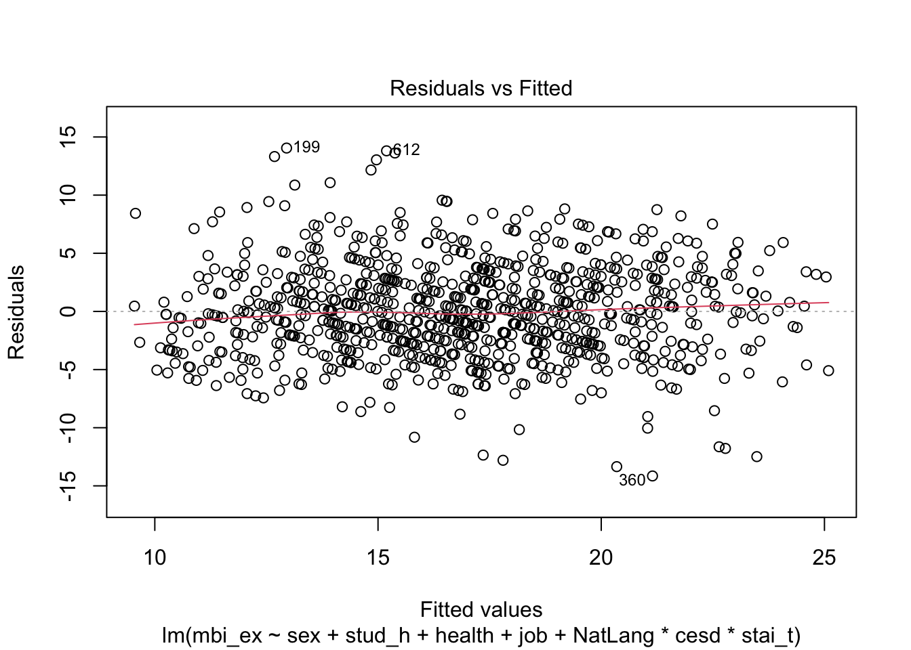
The first diagnostic model of residuals vs. fitted value shows a relatively horizontal line that bounces randomly around the zero line, suggesting linearity and constant variance for the MBI_ex linear regression model.
Most of the points of the MBI_ex linear regression Q-Q plot fall along the line, supporting the assumption of normality.
The Scale-Location plot of the MBI-ex linear regression model is nearly perfectly horizontal without increasing or decreasing, supporting the assumption of constant variance.
The Cook’s distance plot of the MBI_ex linear regression model measures the presence of influential outliers. There appears to be 3 outliers which are influence the model, as shown by at Obs. number at 29, 526, and 756. None of them have a Cook’s distance of 1. However with a sample size of n = 881, 4/n = 0.00454 which means taking a closer look at the outliers here.
The Residuals vs. Leverage plot of the MBI_ex linear regression supports the Cook’s distance plot that there are some influential observations in the model (outliers) as the red line deviates from the horizontal line.
The final diagnostic plot of Cook’s Distance vs. Leverage for the MBI-ex plot shows that while there are some residuals, they don’t have strong leverage.
Overall the diagnostic models supports the goodness of fit of the emotional exhaustion MBI model and the assumptions of linearity, constant variance, and normality, but there are some outliers that should be examined.
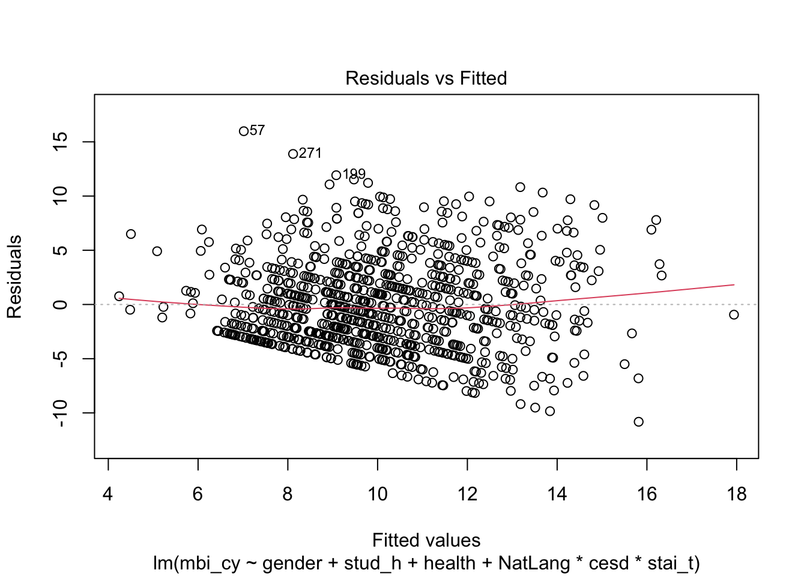
The diagnostic plot of residuals vs. fitted values for the MBI_cy linear regression model is mostly horizontal around the 0 line, though there is some slight funneling in the bottom left half of the plot. This suggests linearity but slight violation of constant variance assumption.
The Q-Q plot for the MBI_cy linear regression supports the assumption of normality, as the points all fall along the line.
The Scale-Location plot of the MBI_cy linear regression shows some increasing trend, but is relatively horizontal. The assumption of constant variance is not totally supported but also not totally violated based on the slope of the red line.
The Cook’s distance plot for the MBI-cy linear regression shows 1 influential outlier at observation number 29. This observation does not have a Cook’s distance of 1, but is greater than 4/n, which with n=881 is 0.00454, which means taking a closer look at the potential of an influential outlier.
The Residuals vs Leverage plot for MBI-cy linear regression model falls within the dashed red line, suggesting that residuals lack leverage to strongly influence the model.
Lastly, the diagnostic plot of Cook’s dist. vs. Leverage for the MBI_cy linear regression model suggests that any outliers in the model do not have strong leverage on the model.
Overall the diagnostic models mostly support the fit of the cynicism MBI model and the assumptions of linearity and normality, as well as the lack of influential outliers. The diagnostic of residuals vs. fitted and residuals vs variance suggesting some slight violation of the assumption of constant variance.
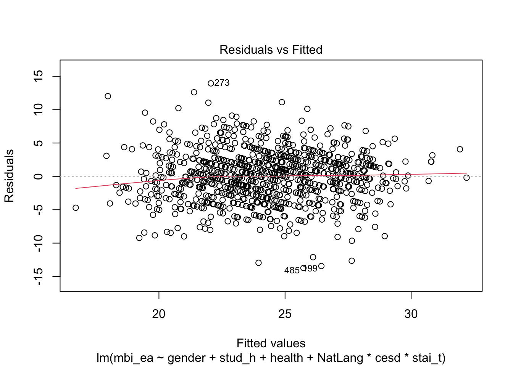
The first diagnostic plot of residuals vs. fitted values for the MBI_ea linear regression has a horizontal trend line without any funneling, supporting the assumptions of linearity and constant variance.
The diagnostic Q-Q plot for the MBI-ea linear regression model supports the assumption of normality, as most of the points fall along the line.
The scale-location diagnostic plot for the MBI_ea linear regression model is approximately horizontal, supporting the assumption of constant variance.
The Cook’s distance diagnostic plot for the MBI_ea linear regression model suggests the lack of influential observations (outliers). None of the observations have a Cook’s distance near 1, with the highest being less than 0.030, suggesting the outliers don’t strongly impact the model.
The residuals vs. leverage plot for the mbi_ea linear regression model further supports the lack of influential observations (outliers), as does the Cook’s Distances vs. Leverage plot below
Overall these diagnostic plots support the goodness of fit of the academic efficacy MBI linear regression model, supporting the assumptions of linearity, constant variance, and normality aswell as suggesting the lack of influential outliers.
Returning to my research question:
Why are some medical students more likely to experience burnout than others?
There was not statistical support for my hypothesis that medical students whose native language was a national language where they are in medical school will have lower burnout than medical students speaking the non-native language. I failed to reject the null-hypothesis that there was no difference in the mean burnout scores of native and non-native language speakers. The only MBI sub scale with any statistically significant difference between native & non-native language speakers was for the emotional exhaustion sub-scale, which was only significant at the 0.1 level.
I still find my original hypothesis plausible as being a medical student in a different country would increase rates of burnout due to cultural shock and isolation from family & friends. However, it is unclear if “native tongue”, the variable in the data set used to code NatLang, truly measures immigrant status or rather ethnicity. Furthermore, the sample used for analysis was of medical students in Switzerland, so these findings cannot be generalized to medical students in all countries.
Through further T-tests discovered that there was statistically significant difference in anxiety & depression levels for native and non-native language speaking medical students in the direction I expected. Through exploration I discovered that the 3-way interaction term of NatLang x Anxiety x Depression was a strong explanatory variable for burnout on all three sub scales: emotional exhaustion, cyncicism, and academic efficacy. Gender, hours studied, and health satisfaction also explain why some medical students are more likely to experience burnout than others on all three sub scales. For emotional exhaustion burnout, having a partner also impacted burnout.
Based on Adjusted R-squared values, AIC values, and diagnostic plots, the linear regression models are a good fit to explain variance in the outcome variables of burnout on each of the 3 MBI sub-scales.
Future research might examine how removing outliers and recoding NatLang to include English speakers might impacts significance of the hypothesis & fit of linear regression. While English is not one of the national languages in Switzerland, it is commonly used and on official signage & documents, so it would be interesting to see if there was a statistically significant difference in burnout between medical students with a native tongue of a commonly used language (national language or English) in Switzerland vs. those who do not. Lastly, testing this hypothesis in a global sample would be interesting and allow for more generalizable findings.
Carrard, V., Bourquin, C., Berney, S, Schlegel, K., Gaume, J., Bart, P-A., Preisig M., Mast, M. A., & Berney, A. (2022). The relationship between medical students’ empathy, mental health, and burnout: A cross-sectional study, Medical Teacher, 44:12, 1392-1399, DOI: 10.1080/0142159X.2022.2098708
Doulougeri, K., Georganta, K., & Montgomery, A. (2016). “Diagnosing” burnout among healthcare professionals: Can we find consensus?, Cogent Medicine, 3:1, DOI: 10.1080/2331205X.2016.1237605
Gradiski, I. P., Borovecki, A., Ćurković, M., San-Martín, M., Delgado Bolton, R. C., & Vivanco, L. (2022). Burnout in International Medical Students: Characterization of Professionalism and Loneliness as Predictive Factors of Burnout. International journal of environmental research and public health, 19(3), 1385. https://doi.org/10.3390/ijerph19031385
Goebert., D., Thompson., D., Takeshita., J., Beach, C., Bryson, P., Ephgrave, K., Kent. A., Kunkel., M., Schechter., J., Tate., J. (2009). Depressive Symptoms in Medical Students and Residents: A Multischool Study. Academic Medicine 84(2):p 236-241, DOI: 10.1097/ACM.0b013e31819391bb
Hlavac, Marek (2022). stargazer: Well-Formatted Regression and Summary Statistics Tables. R package version 5.2.3. https://CRAN.R-project.org/package=stargazer
Jennings, M.L. Medical Student Burnout: Interdisciplinary Exploration and Analysis. J Med Humanit 30, 253–269 (2009). https://doi.org/10.1007/s10912-009-9093-5
Kużelewska,E. (2016).Language Policy in Switzerland. Studies in Logic, Grammar and Rhetoric,45(1) 125-140. https://doi.org/10.1515/slgr-2016-0020
Maslach, C., Jackson, S.E., & Jackson, Leiter, M. P. (Eds.) (1996). Maslach Burnout Inventory manual (3rd ed.).
Paturel, A. (2020). Healing the very youngest healers. American Association of Medical Colleges (AAMC). https://www.aamc.org/news-insights/healing-very-youngest-healers#:~:text=In%20a%20recent%20study%20%2C%209.4,as%20their%20same%2Dage%20peers.
Peters E. (2018). Compassion fatigue in nursing: A concept analysis. Nursing forum, 53(4), 466–480. https://doi.org/10.1111/nuf.12274
Radloff, L.S. (1977). The CES-D Scale: a self-report depression scale for research in the general population. Applied Psychological Measurement, 1:385-401.
Rodriguez, S. Y. S., Carlotta, M. S.. (2017). Predictors of Burnout Syndrome in psychologists. Estudos De Psicologia (campinas), 34(Estud. psicol. (Campinas), 2017 34(1)), 141–150. https://doi.org/10.1590/1982-02752017000100014
Shin, H. S., Park, H., & Lee, Y. M. (2022). The relationship between medical students’ empathy and burnout levels by gender and study years. Patient education and counseling, 105(2), 432–439. https://doi.org/10.1016/j.pec.2021.05.036
Tiesman, H., Weissman, D., Stone., D., Quinlan, K., & Chosewood, L. (2021). Suicide Prevention for Healthcare Workers. CDC. https://blogs.cdc.gov/niosh-science-blog/2021/09/17/suicide-prevention-hcw/
Williams, B., Beovich, B. Psychometric properties of the Jefferson Scale of Empathy: a COSMIN systematic review protocol. Syst Rev 8, 319 (2019). https://doi.org/10.1186/s13643-019-1240-0
Yahya, M. S., Abutiheen, A. A., & Al- Haidary, A. F. (2021). Burnout among medical students of the University of Kerbala and its correlates. Middle East Current Psychiatry, Ain Shams University, 28(1), 78. https://doi.org/10.1186/s43045-021-00152-2
---
title: "Final Project Check in 2"
author: "Emma Narkewicz"
desription: "Emma Narkewicz Final Check-in 2"
date: "04/20/2023"
format:
html:
toc: true
code-fold: true
code-copy: true
code-tools: true
categories:
- emma_narkewicz
- finalpart2
- Burnout
- Medical_students
---
```{r}
#| label: setup
#| warning: false
library(tidyverse)
library(sjPlot)
library(sjmisc)
library(stargazer)
library(broom)
knitr::opts_chunk$set(echo = TRUE)
```
## Research Question
For my final project I want to expand on research on the mental health, empathy, and burnout of medical school students using a data set of 886 medical students in Switzerland. The COVID-19 pandemic heightened the mental health challenges of health care workers around the world (Teisman et al., 2021). Numerous studies show that health care workers are prone to compassion fatigue due to working long hours in stressful work environments with continuous exposure to trauma (Jennings, 2009; Rodriguez & Carlotta, 2017; Peters, 2018; Yayha et al., 2021; Carrard et al., 2022; Shin et al., 2022).
The Association of American Medical Colleges (AAMC) found that 30% of surveyed medical students and residents met the criteria for depression and 10% reported having suicidal thoughts (Pasturel, 2020). Previous studies conducted on samples of health care workers in Switzerland, Iraq, and South Korea examined the impact of gender on burnout, finding that female medical students had higher rates of empathy and burnout than male coworkers (Carrard et al., 2022; Yahya et al., 2021; Shin et al., 2022). A 2009 multi-site study of medical students in the U.S. found statistically significant differences in depression by gender but not by ethnicity (Goebert et al., 2009). In contrast, the same study found statistically significant differences in suicidal ideation by ethnicity, but not by gender, with Black students reporting the highest rates of suicidal ideation & Caucasian students reporting the lowest rates of suicidal ideation (Goebert et al., 2009).
*Research Question: Why are some medical students more likely to experience burnout than others?*
## Hypothesis Testing
I want to explore further how ethnic identity might serve as a protective or risk factor for the burnout of medical students, specifically for international medical students. A 2022 study of medical school students in Croatia found that international medical students experience higher rates of burnout mediated by social and familial loneliness (Gradiski et al., 2022). For my final project I will test whether or not a student's first language being a national language of Switzerland -- where the sample was taken -- impacts their burnout. The commonly spoken national languages of Switzerland are French, German, and Italian (Kużelewska, 2016).
*Hypothesis: Medical students whose native language is a national language of the country where they are studying will experience lower rates of burnout than medical students with other native languages.*
The reasoning behind my hypothesis is if a medical student's native language is one of the national language of Switzerland, they will have benefit from potential protective factors of social, cultural, and familial connections. In contrast, I expect medical students whose native language is not German, French, or Italian to be at higher risk for burnout mediated through increased stress from coping with different culture, language, and physical separation from their family.
## Descriptive Statistics
The data set I will be analyzing contains demographic information on 886 medical students in Switzerland. Students answered demographic information about their age, gender, their year in school and well as the results of self-reported empathy, depression, anxiety, and burnout. The data set was downloaded from Kaggle at https://www.kaggle.com/datasets/thedevastator/medical-student-mental-health?select=Codebook+Carrard+et+al.+2022+MedTeach.csv but originally sourced for a 2022 publication in the Medical Teacher Journal by Carrard et al.
Important variables I want to explore in my data set as potential risk and protective factors:
- Native Language
- Age
- Gender
- Having a romantic partner
- Seeing a psychotherapist
- Hours spent studying
- Having a job
- Jefferson Scale Empathy (JSPE) total empathy score
- Questionnaire of Cognitive and Affective Empathy (QCAE) Cognitive empathy score
- Questionnaire of Cognitive and Affective Empathy QCAE Affective empathy score
- Center for Epidemiologic Studies Depression Scale (CES-D) total score
- State & Trait Anxiety (STAI) score
- Maslach Burnout Inventory (MBI) Emotional Exhaustion
- Maslach Burnout Inventory (MBI) Cynicism
- Maslach Burnout Inventory (MBI) Academic Efficacy
Each of the various empathy, mental health, and burnout scales are scored differently, so care needs to be taken in interpreting these findings. For example, a higher score on the emotional exhaustion and cynicism scales of the MBI indicate higher burn out, while a higher score on the MBI personal achievement indicates lower levels of burnout (Maslach et al., 1996).
```{r}
#Readin Final data set
FinalDataSet <- read_csv("_data/med_student_burnout.csv")
FinalDataSet
```
Prior to examining the descriptive statistics from the med school data set I recoded qualitative variables stored as numeric values, using the Carrard et al., 2022 code book, replacing 0, 1 with clear demographic information about age, gender, having a partner etc. The explanatory variable NatLang which collapses down into if medical students native language is German, French, or Italian (NatSpeaker) or not (NotNatSpeaker).
From the Carrard et al., 2022 code book:
- Gender
- Male = 1
- Female = 2
- Non-binary = 3
- Partner
- Single = 0
- Partnered = 1
- Job
- No = 0
- Yes = 1
- Therapist in Past 12 months
- No = 0
- Yes = 1
- Health Satisfaction
- very dissatisfied = 1
- dissatisfied = 2
- neutral = 3
- satisfied = 4
- very satisfied = 5
```{r}
#Coding Nat Lang
(table(select(FinalDataSet, glang)))
#Recoding categorical variables based on code book
FinalRecoded <- FinalDataSet %>%
mutate(NatLang = case_when(
glang == 1 | glang == 15 | glang == 90 ~ 1,
glang > 1 & glang < 15 | glang > 15 & glang < 90 | glang > 90 ~ 0)
)
FinalRecoded
```
```{r}
#Descriptive statistics for quantitative variables
summary(FinalRecoded)
```
Note that id is not a true numeric variable and therefor the descriptive statistics for it should be disregarded.
Medical students in the sample studied for an average of 25 hours a week, with a maximum of 70 hours.
Scores on the Jefferson Scale of Physician Empathy (JSPE) range from 20-140 with a higher score indicating higher empathy. The mean JSPE score in the sample was was 106.2 and the median JSPE score was 107.0 indicating relatively high empathy. There was a broad range from as low to 67-125, with the IQR indicating most medical students scored in the low 100s range.
There were are scores for all 3 components of MBI burnout: emotional exhaustion, cynicism, and personal achievement.
- On the mbi-ex, medical school students' scores ranged from 5-30, with a median score of 17 and a mean score of 16.88. According to the MBI score guide, half of medical students in the sample exhibit low-level burnout (scoring 17 or less), and the other half exhibiting moderate burnout in terms of emotional exhaustion.
- On the mbi-cyn, medical students' scores ranged from 4-24, with a median of 9 and mean of 10.08. According to the scoring guide, the majority of the sample exhibit moderate burnout (6-11) with some exhibiting high level burnout (12+) in the dimension of cynicism.
- On the mbi-ea, medical students scores ranged from 10-36, with a median score of 24 and a mean score of 24.01. A score of 33 or less indicates high level of burnout and a score between 24-39 indicates moderate level burnout, with medical students falling in the high and moderate burnout range for personal achievement.
```{r}
## Creating character variables to generate props
FinalProp <- FinalRecoded %>%
mutate(nat = case_when (
NatLang == 0 ~ "Non Native",
NatLang == 1 ~ "Native")
)%>%
mutate(gender = case_when(
sex == 1 ~ "Male",
sex == 2 ~ "Female",
sex == 3 ~ "Non-Binary")
) %>%
relocate(`gender`, .before = `age`)%>%
select(!contains("sex")) %>%
mutate(partner = case_when(
part == 1 ~ "partnered",
part == 0 ~ "single")
)%>%
relocate(`partner`, .before = `age`)%>%
select(!"part") %>%
mutate(paid_job = case_when(
job == 0 ~ "no_job",
job == 1 ~ "yes_job")
) %>%
relocate(`paid_job`, .before = `age`)%>%
select(!"job") %>%
mutate(health_sat = case_when(
health == 1 ~ "very_dis",
health == 2 ~ "dis",
health == 3 ~ "neutral",
health == 4 ~ "sat",
health == 5 ~ "very sat")
) %>%
relocate(`health_sat`, .before = `age`)%>%
select(!"health") %>%
mutate(MHcare = case_when(
psyt == 0 ~ "no_ther",
psyt == 1 ~ "yes_ther")
) %>%
relocate(`MHcare`, .before = `age`)%>%
select(!"psyt")
FinalProp
#Frequency of categorical & ordinal variables
prop.table(table(select(FinalProp, nat)))
prop.table(table(select(FinalProp, gender)))
prop.table(table(select(FinalProp, partner)))
prop.table(table(select(FinalProp, paid_job)))
prop.table(table(select(FinalProp, health_sat)))
prop.table(table(select(FinalProp, MHcare)))
```
From the proportion tables above it can be seen that majority (90%) of the sample speaks one of the national languages of Switzerland, while only 10% are non native speakers. The sample is also mostly female (68%), with less than 1% identifying as non-binary. Over half (56%) of the medical students reported having partners, but only about a third of medical students had a paid job (34.9%). The most common (45%) report from medical students was that they were satisfied with their health and less than one quarter (22.5%) of medical student reported seeing a therapist in the last 12 months.
Looking at the gender prop.table, less than 1% of medical students were non-binary. Looking at counts that is only 5 students out of nearly 1000. From an equity standpoint it is great to include diverse gender identities, but for the purposes of analysis & linear regression, there are non non-binary students to meaningfully include in an analysis of gender. Therefor I removed the 5 students who identified as non-binary before conducting analysis. Additionally I recoded the gender dummy variables from 1 & 2 to 0 & 1 for male and female respectiviely.
```{r}
#Counts genders
(table(select(FinalProp, gender)))
#remove non-binary dummy gender & recode
FinalRecoded2 <- FinalRecoded %>%
filter(!str_detect(sex, "3")) %>%
mutate(gender = case_when(
sex == 1 ~ 0,
sex == 2 ~ 1)
)
#remove non-binary categorical
FinalProp2 <- FinalProp %>%
filter(!str_detect(gender, "Non-Binary"))
```
## Analysis
I created several box plots comparing the MBI burnout scores of medical students speaking native language vs. students speaking non-native language. Additionally, I compared the anxiety & depression scored of medical students native and non-native language speaking students
```{r}
#Emotional Exhaustion Burnout Score
ggplot(data = FinalProp2, aes(x= nat, y = mbi_ex, fill = nat)) + geom_boxplot() +
labs(title = "Box Plot - mbi_ex Emotional Burnout", x = "Native Language Spoken", y = "mbi_ex")
```
Native language speaking and non-native language speaking medical students seemed to have nearly identical median scores for Emotional Exhaustion (mbi_ex). The IQR however for non-native languge speaking students does appear to start & end higher (higher Q1 & Q3 MBI-ex scores) than native students, suggesting the potential for higher emotional exhuastion burnout for non-native language speaking students.
```{r}
#Cynicism Score
ggplot(data = FinalProp, aes(x = nat, y = mbi_cy, fill = nat)) + geom_boxplot() +
labs(title = "Box Plot - mbi_cy Cynicism Burnout", x = "Native Language Spoken", y = "mbi_cy")
```
Non-native speaking medical students appeared to score slightly higher on average than non-native speaking medical students on Cynicism as measured by the mbi-cy, with a higher median score. The IQR of mbi-cy scores for non-native language speaking medical students is higher for non-native students with a higher Q1 & Q3. There appears to be one high outlier for native language speakers cynicism scores.
```{r}
#Academic Efficacy Score
ggplot(data = FinalProp2, aes(x= nat, y = mbi_ea, fill = nat)) + geom_boxplot() +
labs(title = "Box Plot - mbi-ea Academic Efficacy Burnout", x = "Native Language Spoken", y = "mbi_ea")
```
Lastly, native language speaking and non-native language speaking medical students seemed to have nearly identical median scores for Academic Efficacy burnout (mbi_ea), with one low-outlier of scores for native language speaking medical students. However non-native medical school students have a lower MBI_ea Q1 & Q3 which corresponds with higher burnout on this subscale.
```{r}
#Depression Score
ggplot(data = FinalProp, aes(x= nat, y = cesd, fill = nat)) + geom_boxplot() +
labs(title = "Box Plot - cesd measure of Depression", x = "Native Language Spoken", y = "CESD Score")
```
Non-native national language speakers have a higher median on CESD score than native national language speakers, suggesting higher depression among native students. The Q1 & Q3 of the non-native language speaking medical students CESD is higher than scores for native language speaking students. There are several high outliers for native and non-native language speaking students.
```{r}
#Anxiety Score
ggplot(data = FinalProp2, aes(x= nat, y = stai_t, fill = nat)) + geom_boxplot() +
labs(title = "Box Plot - stai_t measure of Anxiety", x = "Native Language Spoken", y = "stai_t Score")
```
Non-native national languages speaking medical students have a higher median, Q1, & Q3 stai_t anxiety score than native language speaking medical students.
Higher depression and anxiety score for non-native students are not the hypothesis being tested, but it is plausible that anxiety & depression mediate the impact of speaking a native language on burnout. Anxiety and depression, as measured by stai_t and cesd scores, will be treated as interaction terms in linear regression model, with graphic models used to evaluate this.
### Gender
Previous studies on the impact of gender and burnout found that being female predicted higher burnout. In the linear regression model, I will want to control for the impact of gender on burnout scores by including it as an explanatory variable.
On the plots below, I facet wrapped the box & whiskers plot of emotional burnout comparison by native language to visualize difference in the 3 MBI burnout scales when controlled by gender.
```{r}
#Emotional Exhaustion Burnout Score
ggplot(data = FinalProp2, aes(x= nat, y = mbi_ex, fill = nat)) + geom_boxplot() +
labs(title = "Box Plot Emotional Burnout Controlled by Gender", x = "Native Language Spoken", y = "MBI_ex Score") + facet_wrap(vars(`gender`))
```
```{r}
#Emotional Cynicism Burnout Score
ggplot(data = FinalProp2, aes(x= nat, y = mbi_cy, fill = nat)) + geom_boxplot() +
labs(title = "Box Plot Cynicism Burnout Controlled by Gender", x = "Native Language Spoken", y = "MBI_cy Score") + facet_wrap(vars(`gender`))
```
```{r}
#Academic Efficacy Burnout Score
ggplot(data = FinalProp2, aes(x= nat, y = mbi_ex, fill = nat)) + geom_boxplot() +
labs(title = "Box Plot Academic Efficacy Burnout Controlled by Gender", x = "Native Language Spoken", y = "MBI_ea Score") + facet_wrap(vars(`gender`))
```
Controlling for gender there still seems to be a difference between the MBI scores of native and non-native language speaking MBI burnout scores. Looking at the academic efficacy score, for non-native male med students it appears to be higher than native male med students, suggesting lower academic efficacy burnout counter to my hypothesis.
### Applying feedback from Final Check in 1
In response to feedback on Check In 1, I kept categorical data coded as dummy variables 0,1 format for the linear regression. I did keep a "prop"data set record to use to calculate proportions & frequencies of categorical variables.
In deciding how to best work with the 3 MBI burnout variables, I reviewed literature on burnout and how prior researchers chose to work with the variables. A 2016 systematic review by Doulougeri et al. of 50 articles on burnout in medical staff as measured by the MBI found that the majority of studies analyzed burn out as sub scales of emotional exhaustion, cynicism (also known as depersonalization), & academic efficacy (also known as professional accomplishment), as opposed to trying to create one total scale.
This approach also aligns with the finding that burnout is often conceptualized as a multidimensional construct. Maslach designed the MBI to distinguish between the three sub-scales. Studies on burnout almost universally considered the MBI emotional exhaustion (EE) sub-scale in determining burnout, sometimes alone, sometimes with cynicism, and sometimes with both cynicism & academic efficacy. According to the literature, burn out is complex and multidimensional concepts, and impacts both an individual's well being and their ability to perform their job as a medical professional.
Based on all of these factors, I will run three separate models with each of the 3 MBI sub-scales as dependent variables.
## Hypothesis Testing
Each MBI burnout sub-scale score will be a response variable for each of the 3 models. These scales are numeric and continuous.
- emotional exhaustion
- cynicism
- academic efficacy
As mentioned earlier, a higher score on emotional exhaustion & cynicism are considered indicative of burnout, whereas lower scores of academic efficacy are indicative of burnout
The explanatory variable I am testing in my hypothesis is whether or not a student speaks a native language of the country they are attending medical school in, coded as a binary dummy variable (0 = non-native, 1 = native)
As previous studies have found a relationship between gender and burnout, I will need to have gender as a control variable in the model. I will also examine if I will need to also control for the influence of having a partner, having a job, or seeing a therapist in past 12 months (all also binary dummy variables) on medical student burnout, by adding them to the regression model and seeing their impact.
### T test
To test my hypothesis that *Medical students whose native language is a national language of the country where they are studying will experience lower rates of burnout than medical students with other native languages*, I will run a Welch's Independent T-Test on the data to see if there is a statistically significant difference between the burnout of native and non-native medical students. Specifically, I will run a one-sided test, to see if the mean burnout of non-native students is higher than of native students.
The null hypothesis is that there is no difference in the mean burnout of native medical students than non-native medical students
The alternative hypothesis is that the mean burnout of native students is less than that non-native medical students. For the emotional exhaustion & cyncicism burnout scores, higher score corresponds to higher burnout, for the academic efficacy, a lower score corresponds with higher burnout.
### Emotional Exhaustion
H0: μ = μ0
HA: μ \< μ0
The first T-Test compared the emotional exhaustion scores of native and non-native language speaking medical students.
```{r}
head(FinalRecoded)
#Ttest
Native <- subset(FinalRecoded, FinalRecoded$NatLang == 1)
NonNative <- subset(FinalRecoded, FinalRecoded$NatLang == 0)
##One side t-test, MBI ex
ttest_ex <- t.test(Native$mbi_ex, NonNative$mbi_ex, var.equal = TRUE, alternative = "less")
ttest_ex
```
With a p-value of 0.08 the difference between the mean is statistically significant at the .1 level but not the standard 0.05 level. Therefor I fail to reject the null hypothesis that there is no difference between the native and non-native students MBI_ex scores.
### Cynicism
H0: μ = μ0
HA: μ \< μ0
```{r}
#Cynicism
ttest_cy <- t.test(Native$mbi_cy, NonNative$mbi_cy, var.equal = TRUE, alternative = "less")
ttest_cy
```
Next the cynicism MBI burnout scores for native and non-native scores were compared in a T-Test. With a p-value of 0.1089, the difference between the means is not statistically significant at the 0.1 or the 0.05 levels. I fail to reject the null hypothesis that there is no difference between the native and non-native medical students MBI_cy scores.
### Academic Efficacy
H0: μ = μ0
HA: μ \> μ0
Lastly, I performed a T-Test on the final MBI sub-score, the academic efficacy between native and non-native language speaking medical students. As a lower MBI_ea score corresponds with higher burnout on this sub-scale the alternative hypothesis of the one-sided T-test is that
```{r}
#T-test Academic Efficacy
ttest_ea <- t.test(Native$mbi_ea, NonNative$mbi_ea, var.equal = TRUE, alternative = "greater")
ttest_ea
```
With a p-value of 0.6179 the mean MBI_ea score of native medical students is not greater than the mean MBI_ea score of native people at all, let alone at the statistically significant level.
### Interpretation of Hypothesis Testing & Further Tests
Out of the 3 MBI burnout sub-scales, only the one-sided difference in burnout as measured on the MBI emotional exhaustion scale is statistically significant at the 0.1 level. There is not statistically significant higher burnout on any of the 3 MBI scores at the 0.05 level. I therefor fail to reject the null hypothesis that there is no difference between the mean MBI burnout scores of native and non-native language speaking medical school students.
Though not my hypothesis, I ran Welch's T-tests on anxiety (stai_t) and depression (CESD) scores to see if there was a statistically significant difference between native and non-native speaking medical school students. Once again I ran a one-sided t-test, with the assumption that the mean anxiety and depression of non-native language speaking medical students will be higher than that of native language speaking medical students.
H0: μ = μ0
HA: μ \< μ0
```{r}
# T-test Anxiety
ttest_stai_t <- t.test(Native$stai_t, NonNative$stai_t, var.equal = TRUE, alternative = "less")
ttest_stai_t
```
With a p-value of 0.005 there is strong statistical significance to reject the null hypothesis that there is no difference in the mean anxiety of native and non-native language speaking medical students. This suggests that med students who speak the non-native language experience higher anxiety levels than native-language speakers.
```{r}
# T-test Depression
ttest_cesd <- t.test(Native$cesd, NonNative$cesd, var.equal = TRUE, alternative = "less")
ttest_cesd
```
With a p-value of 0.003 there is strong statistical significance to reject the null hypothesis that there is no difference in the mean depression of native and non-native language speaking medical students. This suggests that med students who speak the non-native language experience higher depression levels than native-language speakers.
Though I failed to reject my null hypothesis of burnout, returning to my research question of" *Why are some medical students more likely to experience burnout than others?* it seems that native language status, anxiety, depression all interact on one-another to help explain burnout. This will be explored further in the linear regression models.
## Linear Regressions
### Emotional Exhaustion Burnout Model (MBI_ex)
First, I created a linear regression model with only native language status as the explanatory variable and mbi_ex emotional exhaustion burnout score as the outcome variable. As seen in the summary of the model below with a p-value of 0.132 and Adjusted R-squared value of 0.001449, variance in native language speaking status alone does explain variance in emotional exhaustion MBI scores. National language is not a statistically significant explanatory variable in the linear regression model. The AIC of this first model is 5422, with the lower the AIC score the better the fit of the model
```{r}
#Linear regression model with only NatLang as explanatory variable
model_ex_1 <- lm(mbi_ex ~ NatLang, data = FinalRecoded2)
summary(model_ex_1)
## AIC
glance(model_ex_1)$AIC
```
The second linear regression model includes gender as an explanatory variable along with native-language status for the outcome of emotional exhaustion MBI scores. In this regression model gender is statistically significant explanatory variable with a p value of 1.66 x e6, but native-language status is not. The adjusted R-squared value is higher than the first model but still low at 0.02612. The AIC value of this model is 5401 is lower than the first model.
```{r}
#Linear Regression model with NatLang & gender
model_ex_2 <- lm(mbi_ex ~ NatLang + gender , data = FinalRecoded2)
summary(model_ex_2)
#AIC
glance(model_ex_2)$AIC
```
In the third linear regression model was a 3-way interaction of depression (CESD), anxiety (stai_t), & native language as an explanatory variable for MBI emotional exhaustion scores in addition to gender. Adding the 3 way interaction term to the model greatly increased the predictive power of the model, raising the adjusted R-squared value to 0.3885. In this model, Anxiety (stai_t) & Depression \* Anxiety (ces\*stai_t) are both statistically significant at the 0.05 level, and Depression (cesd) is statistically significant at the 0.001 level. The AIC of 4997 is the lowest of any model so far, suggesting the best fit.
```{r}
#Linear Regression model with NatLang * Anxiety * Depression & gender explanatory variables
model_ex_3 <- lm(mbi_ex ~ gender + NatLang*cesd*stai_t , data = FinalRecoded2)
summary(model_ex_3)
#AIC
glance(model_ex_3)$AIC
```
To determine the best model, I added the control variables of hours studied, having a partner, job status, consulting a psychotherapist in past 12 months, & health satisfaction to see the impact on the adjusted R squared value.
```{r}
##Control variables
head(FinalRecoded2)
##hours studied strengthens model
summary(lm(mbi_ex ~ gender + stud_h + NatLang*cesd*stai_t , data = FinalRecoded2))
##partner
summary(lm(mbi_ex ~ gender + stud_h + part + NatLang*cesd*stai_t , data = FinalRecoded2))
##having job
summary(lm(mbi_ex ~ gender + stud_h + part + job + NatLang*cesd*stai_t , data = FinalRecoded2))
## seen psychiatrist
summary(lm(mbi_ex ~ gender + stud_h + part + psyt + NatLang*cesd*stai_t , data = FinalRecoded2))
## health sat
summary(lm(mbi_ex ~ gender + stud_h + part + health + NatLang*cesd*stai_t , data = FinalRecoded2))
```
Variables that improved model fit were:
- Hours studied (stud_h)
- Having a partner (part)
- Health satisfaction (health)
The best-fitting linear regression model for MBI_ex as determined by adjusted R-squared includes gender, hours studied, health satisfaction, having a partner, and 3-way interaction between native language, depression, and anxiety as explanatory variables. This has an Adjusted R-Squared value of 0.402, suggesting much of the the variance in MBI emotional exhaustion scores of medical school students is explained by variance in the explanatory variables. The AIC value of 4981 is the lowest of any of the linear regression models, suggesting the best fit.
- Explanatory variables significant at the 0.05 level are:
- Having a partner (part)
- Anxiety (stai_t)
- 2-way interaction between anxiety & depression (cesd \* stai_t )
- Explanatory variables significant at the 0.01 level are:
- Hours studying (stud_h)
- Health satisfaction (health)
- Explanatory variables significant at the 0.01 level are:
- Depression (cesd)
```{r}
#Model 4
MBI_ex_bestfit <- lm(mbi_ex ~ gender + stud_h + health + part + NatLang*cesd*stai_t, data = FinalRecoded2)
summary(MBI_ex_bestfit)
#AIC
glance(MBI_ex_bestfit)$AIC
```
### Cynicism Burnout Model (MBI_cy)
For the cynicism burnout sub scale, I once again started by running a linear regression model with only Native Language as the explanatory variable and mbi_cy score as the outcome variable. NatLang was not a statistically significant explanatory variable with a p-value of 0.186. The Adjusted R-Squared of the model was very low at 0.0085, suggesting that variance NatLang alone does not explain the variance in mbi_cy scores for medical students. The AIC of 5183 serves as a baseline for comparison for goodness of fit with future models.
```{r}
#MBI-cy only nat lang as explanatory variables
model_cy_1 <- lm(mbi_cy ~ NatLang, data = FinalRecoded2)
summary(model_cy_1)
#AIC
glance(model_cy_1)$AIC
```
As with the previous emotional exhaustion sub-scale, next I added gender as a the second explanatory variable, as the impact of gender on burnout has been studied. Not only were neither NatLang or gender statistically significant (p-values of 0.191 and 0.783 respectively), but the linear regression model with gender & NatLang as explanatory variables had a worse Adjusted R-Squared than the first model with a negative R-squared of -0.0001993. The AIC of 5185 is higher than in the first model, confirming the worse fit of this model.
```{r}
#MBI-cy nat lang & gender as explanatory variables
model_cy_2 <- lm(mbi_cy ~ NatLang + gender, data = FinalRecoded2)
summary(model_cy_2)
#AIC
glance(model_cy_2)$AIC
```
For the third linear regression model I added the 3 way interaction of NatLang x Anxiety (stai-t score) x Depression (cesd) as an explanatory variable to gender in model 2. The Adjusted R-squared value of 0.1775 suggest a much better fiting model than in the prior 2 models. Gender is statistically significant at the 0.01 level (p-value = 0.0125). Depression (cesd, p-value = 0.07813) & Anxiety (stai_t, p-value = 0.08613) are both significant at the 0.1 level. Contrary to model 2, removing gender as an explanatory variable would lower the adjusted R-squared to gender 0.1685. The AIC of this model is 5027, suggesting the best fit so far.
```{r}
#Model 3 MBI_cy 3 way interaction NatLang x cesd x stai_t + gender
model_cy_3 = lm(mbi_cy ~ + gender + NatLang*cesd*stai_t , data = FinalRecoded2)
summary(model_cy_3)
#AIC
glance(model_cy_3)$AIC
#Test without gender
summary(lm(mbi_cy ~ NatLang*cesd*stai_t , data = FinalRecoded2))
```
\` To determine the best model, I added the control variables of hours studied, having a partner, job status, consulting a psychotherapist in past 12 months, & health satisfaction to see the impact on the adjusted R squared value.
```{r}
##Control variables
##hours studied strengthens model
summary(lm(mbi_cy ~ gender + stud_h + NatLang*cesd*stai_t , data = FinalRecoded2))
##partner - lowered adjusted r-squared
summary(lm(mbi_cy ~ gender + stud_h + part + NatLang*cesd*stai_t , data = FinalRecoded2))
##having job - lowered adjusted r-squared
summary(lm(mbi_cy ~ gender + stud_h + job + NatLang*cesd*stai_t , data = FinalRecoded2))
## seen psychiatrist - did not improve R-squared
summary(lm(mbi_cy ~ gender + stud_h + psyt + NatLang*cesd*stai_t , data = FinalRecoded2))
## health sat - improved model
summary(lm(mbi_cy ~ gender + stud_h + health + NatLang*cesd*stai_t , data = FinalRecoded2))
```
- Variables that increased the adjusted r-squared of the model were:
- Hours studied (stud_h)
- Health satisfaction (health)
The best-fitting linear regression model for MBI_cy as determined by adjusted R-squared values includes gender, hours studied, health satisfaction, and the 3-way interaction between native language, depression, and anxiety as explanatory variables. This has an Adjusted R-Squared value of 0.2055, suggesting some of the the variance in MBI cynicism scores of medical school students is explained by variance in the explanatory variables. With the AIC level of 4990, the AIC also confirms this is the best-fitting model.
- Explanatory variables significant at the 0.1 level are:
- Depress (cesd)
- Anxiety (stai_t)
- Explanatory variables significant at the 0.001 level are:
- Gender
- Hours studying (stud_h)
```{r}
#Model 4
MBI_cy_bestfit <- lm(mbi_cy ~ gender + stud_h + health + NatLang*cesd*stai_t, data = FinalRecoded2)
summary(MBI_cy_bestfit)
#AIC
glance(MBI_cy_bestfit)$AIC
```
### Academic Efficacy Burnout MBI-ea
As with the prior 2 MBI subs scales, I first created a linear regression model with NatLang as the only explanatory variable and academic efficacy burnout MBI_ea as the outcome. NatLang is not a statistically significant explanatory variable in the model with a p-value of 0.852. The Adjusted R-squared of -0.0011 shows the model is a very bad for predicting the outcome variable MBI_ea score. The AIC of this model is 5197.
```{r}
#Academic Efficacy NatLang Alone
model_ea_1 <- lm(mbi_ea ~ NatLang, data = FinalRecoded2)
summary(model_ea_1)
#AIC
glance(model_ea_1)$AIC
```
For the second model, I added the second explanatory variable of gender, based on previous findings of its impact on burnout. In this model, neither NatLang (p-value = 0.819) or gender (p-value = 0.351) are statistically significant. The fit of the model is still very poor, as indicated by the Adjusted R-squared of -0.00124. Still, very litle of the variance in academic efficacy burnout is explained by the variance in gender and native language status. The AIC is slightly higher at 5198, suggesting a poor fit of the model.
```{r}
#Linear regression model NatLang & gender
model_ea_2 <- lm(mbi_ea ~ NatLang + gender, data = FinalRecoded2)
summary(model_ea_2)
#AIC
glance(model_ea_2)$AIC
```
For the third linear regression model, I added the 3-way interaction of NatLang x Depression (cesd) x Anxiety (stai_t) as an explanatory variable in addition to gender, with the outcome variable of mbi_ea score. The adjusted R-squared of this model is 0.2597, suggesting a much better fit than prior models. In this model, anxiety (stai_t) is statistically significant at the 0.05 level. The AIC of 4938 is the lowest of the models so far, suggesting the best fit.
```{r}
##Model with gender & 3 way interaction NatLang x Depression x Anxiety
model_ea_3 <- lm(mbi_ea ~ gender + NatLang*cesd*stai_t, data = FinalRecoded2)
summary(model_ea_3)
#AIC
glance(model_ea_3)$AIC
#3way interaction without gender - worse fit
summary(lm(mbi_ea ~ NatLang*cesd*stai_t, data = FinalRecoded2))
```
To determine the best model, I added the control variables of hours studied, having a partner, job status, consulting a psychotherapist in past 12 months, & health satisfaction to see the impact on the adjusted R squared value.
```{r}
##Control variables
##hours studied strengthens model
summary(lm(mbi_ea ~ gender + stud_h + NatLang*cesd*stai_t , data = FinalRecoded2))
##partner - weakens model
summary(lm(mbi_ea ~ gender + stud_h + part + NatLang*cesd*stai_t , data = FinalRecoded2))
##having job -weakens model
summary(lm(mbi_ea ~ gender + stud_h + job + NatLang*cesd*stai_t , data = FinalRecoded2))
## seen psychiatrist - weakens model
summary(lm(mbi_ea ~ gender + stud_h + psyt + NatLang*cesd*stai_t , data = FinalRecoded2))
## health sat - improved model
summary(lm(mbi_ea ~ gender + stud_h + health + NatLang*cesd*stai_t , data = FinalRecoded2))
```
- Variables that increased the adjusted r-squared of the model were:
- Hours studied (stud_h)
- Health satisfaction (health)
The best-fitting linear regression model for MBI_cy as determined by adjusted R-squared values includes gender, hours studied, health satisfaction, and the 3-way interaction between native language, depression, and anxiety as explanatory variables. This has an Adjusted R-Squared value of 0.298, suggesting some of the the variance in MBI academic efficacy scores of medical school students is explained by variance in the explanatory variables. The AIC of 4893 is the lowest of any of the linear regression models, supporting the fit of this model.
- Explanatory variables significant at the 0.1 level are:
- Health satisfaction (health)
- Explanatory variables significant at the 0.05 level are:
- Anxiety (stai_t)
- Explanatory variables significant at the 0.001 level are:
- Gender
- Hours studied (stud_h)
```{r}
#Best fit model academic efficacy burnout
MBI_ea_bestfit <- lm(mbi_ea ~ gender + stud_h + health + NatLang*cesd*stai_t, data = FinalRecoded2)
#AIC
glance(MBI_ea_bestfit)$AIC
summary(MBI_ea_bestfit)
```
## Diagnostic Models
### MBI Emotional Exhaustion
```{r}
#Diagnostic Models Emotional Exhaustion
fit_ex <- lm(mbi_ex ~ sex + stud_h + health + job + NatLang*cesd*stai_t, data = FinalRecoded2)
##MBI_ex Residuals vs. Fitted
plot(fit_ex, which = 1)
```
The first diagnostic model of residuals vs. fitted value shows a relatively horizontal line that bounces randomly around the zero line, suggesting linearity and constant variance for the MBI_ex linear regression model.
```{r}
##MBI_Ex Normal Q-Q
plot(fit_ex, which = 2)
```
Most of the points of the MBI_ex linear regression Q-Q plot fall along the line, supporting the assumption of normality.
```{r}
##MBI_Ex Scale Location
plot(fit_ex, which = 3)
```
The Scale-Location plot of the MBI-ex linear regression model is nearly perfectly horizontal without increasing or decreasing, supporting the assumption of constant variance.
```{r}
##MBI_Ex Cook's Distance
plot(fit_ex, which = 4)
```
The Cook's distance plot of the MBI_ex linear regression model measures the presence of influential outliers. There appears to be 3 outliers which are influence the model, as shown by at Obs. number at 29, 526, and 756. None of them have a Cook's distance of 1. However with a sample size of n = 881, 4/n = 0.00454 which means taking a closer look at the outliers here.
```{r}
##MBI_Ex Residuals vs. leverage
plot(fit_ex, which = 5)
```
The Residuals vs. Leverage plot of the MBI_ex linear regression supports the Cook's distance plot that there are some influential observations in the model (outliers) as the red line deviates from the horizontal line.
```{r}
##MBI_Ex Cook's Distance vs Leverage
plot(fit_ex, which = 6)
```
The final diagnostic plot of Cook's Distance vs. Leverage for the MBI-ex plot shows that while there are some residuals, they don't have strong leverage.
Overall the diagnostic models supports the goodness of fit of the emotional exhaustion MBI model and the assumptions of linearity, constant variance, and normality, but there are some outliers that should be examined.
### MBI Cynicism
```{r}
##Diagnostic model
fit_cy <- lm(mbi_cy ~ gender + stud_h + health + NatLang*cesd*stai_t, data = FinalRecoded2)
##MBI_ex Residuals vs. Fitted
plot(fit_cy, which = 1)
```
The diagnostic plot of residuals vs. fitted values for the MBI_cy linear regression model is mostly horizontal around the 0 line, though there is some slight funneling in the bottom left half of the plot. This suggests linearity but slight violation of constant variance assumption.
```{r}
##MBI_cy Q-Q plot
plot(fit_cy, which = 2)
```
The Q-Q plot for the MBI_cy linear regression supports the assumption of normality, as the points all fall along the line.
```{r}
##MBI_cy Scale Location
plot(fit_cy, which = 3)
```
The Scale-Location plot of the MBI_cy linear regression shows some increasing trend, but is relatively horizontal. The assumption of constant variance is not totally supported but also not totally violated based on the slope of the red line.
```{r}
##MBI_cy Cook's distance
plot(fit_cy, which = 4)
```
The Cook's distance plot for the MBI-cy linear regression shows 1 influential outlier at observation number 29. This observation does not have a Cook's distance of 1, but is greater than 4/n, which with n=881 is 0.00454, which means taking a closer look at the potential of an influential outlier.
```{r}
##MBI_cy Residuals vs Leverage
plot(fit_cy, which = 5)
```
The Residuals vs Leverage plot for MBI-cy linear regression model falls within the dashed red line, suggesting that residuals lack leverage to strongly influence the model.
```{r}
##MBI_cy Cook's dist. vs Leverage
plot(fit_cy, which = 6)
```
Lastly, the diagnostic plot of Cook's dist. vs. Leverage for the MBI_cy linear regression model suggests that any outliers in the model do not have strong leverage on the model.
Overall the diagnostic models mostly support the fit of the cynicism MBI model and the assumptions of linearity and normality, as well as the lack of influential outliers. The diagnostic of residuals vs. fitted and residuals vs variance suggesting some slight violation of the assumption of constant variance.
### MBI Acamemic Efficacy
```{r}
fit_ea <- lm(mbi_ea ~ gender + stud_h + health + NatLang*cesd*stai_t, data = FinalRecoded2)
#MBI_ea Residuals vs. Fitted
plot(fit_ea, which = 1)
```
The first diagnostic plot of residuals vs. fitted values for the MBI_ea linear regression has a horizontal trend line without any funneling, supporting the assumptions of linearity and constant variance.
```{r}
#MBI_ea Q-Q plot
plot(fit_ea, which = 2)
```
The diagnostic Q-Q plot for the MBI-ea linear regression model supports the assumption of normality, as most of the points fall along the line.
```{r}
#MBI_ea scale-location
plot(fit_ea, which = 3)
```
The scale-location diagnostic plot for the MBI_ea linear regression model is approximately horizontal, supporting the assumption of constant variance.
```{r}
#MBI_ea
plot(fit_ea, which = 4)
```
The Cook's distance diagnostic plot for the MBI_ea linear regression model suggests the lack of influential observations (outliers). None of the observations have a Cook's distance near 1, with the highest being less than 0.030, suggesting the outliers don't strongly impact the model.
```{r}
#MBI_ea residuals vs. leverage
plot(fit_ea, which = 5)
```
The residuals vs. leverage plot for the mbi_ea linear regression model further supports the lack of influential observations (outliers), as does the Cook's Distances vs. Leverage plot below
```{r}
#MBI_ea Cooks Distance vs. Leverage
plot(fit_ea, which = 6)
```
Overall these diagnostic plots support the goodness of fit of the academic efficacy MBI linear regression model, supporting the assumptions of linearity, constant variance, and normality aswell as suggesting the lack of influential outliers.
### Discussion
Returning to my research question:
*Why are some medical students more likely to experience burnout than others?*
There was not statistical support for my hypothesis that medical students whose native language was a national language where they are in medical school will have lower burnout than medical students speaking the non-native language. I failed to reject the null-hypothesis that there was no difference in the mean burnout scores of native and non-native language speakers. The only MBI sub scale with any statistically significant difference between native & non-native language speakers was for the emotional exhaustion sub-scale, which was only significant at the 0.1 level.
I still find my original hypothesis plausible as being a medical student in a different country would increase rates of burnout due to cultural shock and isolation from family & friends. However, it is unclear if "native tongue", the variable in the data set used to code NatLang, truly measures immigrant status or rather ethnicity. Furthermore, the sample used for analysis was of medical students in Switzerland, so these findings cannot be generalized to medical students in all countries.
Through further T-tests discovered that there was statistically significant difference in anxiety & depression levels for native and non-native language speaking medical students in the direction I expected. Through exploration I discovered that the 3-way interaction term of NatLang x Anxiety x Depression was a strong explanatory variable for burnout on all three sub scales: emotional exhaustion, cyncicism, and academic efficacy. Gender, hours studied, and health satisfaction also explain why some medical students are more likely to experience burnout than others on all three sub scales. For emotional exhaustion burnout, having a partner also impacted burnout.
Based on Adjusted R-squared values, AIC values, and diagnostic plots, the linear regression models are a good fit to explain variance in the outcome variables of burnout on each of the 3 MBI sub-scales.
Future research might examine how removing outliers and recoding NatLang to include English speakers might impacts significance of the hypothesis & fit of linear regression. While English is not one of the national languages in Switzerland, it is commonly used and on official signage & documents, so it would be interesting to see if there was a statistically significant difference in burnout between medical students with a native tongue of a commonly used language (national language or English) in Switzerland vs. those who do not. Lastly, testing this hypothesis in a global sample would be interesting and allow for more generalizable findings.
## Works Cited
Carrard, V., Bourquin, C., Berney, S, Schlegel, K., Gaume, J., Bart, P-A., Preisig M., Mast, M. A., & Berney, A. (2022). The relationship between medical students' empathy, mental health, and burnout: A cross-sectional study, Medical Teacher, 44:12, 1392-1399, DOI: 10.1080/0142159X.2022.2098708
Doulougeri, K., Georganta, K., & Montgomery, A. (2016). "Diagnosing" burnout among healthcare professionals: Can we find consensus?, Cogent Medicine, 3:1, DOI: 10.1080/2331205X.2016.1237605
Gradiski, I. P., Borovecki, A., Ćurković, M., San-Martín, M., Delgado Bolton, R. C., & Vivanco, L. (2022). Burnout in International Medical Students: Characterization of Professionalism and Loneliness as Predictive Factors of Burnout. International journal of environmental research and public health, 19(3), 1385. https://doi.org/10.3390/ijerph19031385
Goebert., D., Thompson., D., Takeshita., J., Beach, C., Bryson, P., Ephgrave, K., Kent. A., Kunkel., M., Schechter., J., Tate., J. (2009). Depressive Symptoms in Medical Students and Residents: A Multischool Study. Academic Medicine 84(2):p 236-241, DOI: 10.1097/ACM.0b013e31819391bb
Hlavac, Marek (2022). stargazer: Well-Formatted Regression and Summary Statistics Tables. R package version 5.2.3. https://CRAN.R-project.org/package=stargazer
Jennings, M.L. Medical Student Burnout: Interdisciplinary Exploration and Analysis. J Med Humanit 30, 253--269 (2009). https://doi.org/10.1007/s10912-009-9093-5
Kużelewska,E. (2016).Language Policy in Switzerland. Studies in Logic, Grammar and Rhetoric,45(1) 125-140. https://doi.org/10.1515/slgr-2016-0020
Maslach, C., Jackson, S.E., & Jackson, Leiter, M. P. (Eds.) (1996). Maslach Burnout Inventory manual (3rd ed.).
Paturel, A. (2020). Healing the very youngest healers. American Association of Medical Colleges (AAMC). https://www.aamc.org/news-insights/healing-very-youngest-healers#:\~:text=In%20a%20recent%20study%20%2C%209.4,as%20their%20same%2Dage%20peers.
Peters E. (2018). Compassion fatigue in nursing: A concept analysis. Nursing forum, 53(4), 466--480. https://doi.org/10.1111/nuf.12274
Radloff, L.S. (1977). The CES-D Scale: a self-report depression scale for research in the general population. Applied Psychological Measurement, 1:385-401.
Rodriguez, S. Y. S., Carlotta, M. S.. (2017). Predictors of Burnout Syndrome in psychologists. Estudos De Psicologia (campinas), 34(Estud. psicol. (Campinas), 2017 34(1)), 141--150. https://doi.org/10.1590/1982-02752017000100014
Shin, H. S., Park, H., & Lee, Y. M. (2022). The relationship between medical students' empathy and burnout levels by gender and study years. Patient education and counseling, 105(2), 432--439. https://doi.org/10.1016/j.pec.2021.05.036
Tiesman, H., Weissman, D., Stone., D., Quinlan, K., & Chosewood, L. (2021). Suicide Prevention for Healthcare Workers. CDC. https://blogs.cdc.gov/niosh-science-blog/2021/09/17/suicide-prevention-hcw/
Williams, B., Beovich, B. Psychometric properties of the Jefferson Scale of Empathy: a COSMIN systematic review protocol. Syst Rev 8, 319 (2019). https://doi.org/10.1186/s13643-019-1240-0
Yahya, M. S., Abutiheen, A. A., & Al- Haidary, A. F. (2021). Burnout among medical students of the University of Kerbala and its correlates. Middle East Current Psychiatry, Ain Shams University, 28(1), 78. https://doi.org/10.1186/s43045-021-00152-2